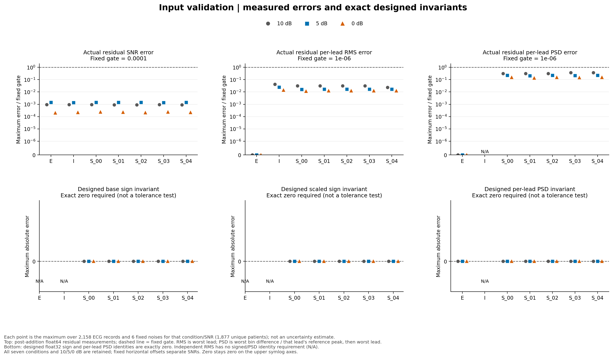
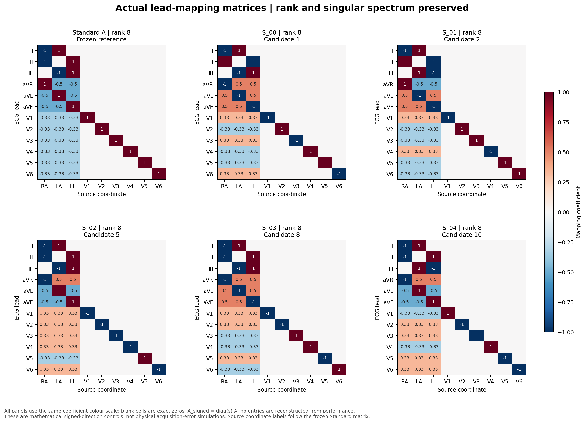
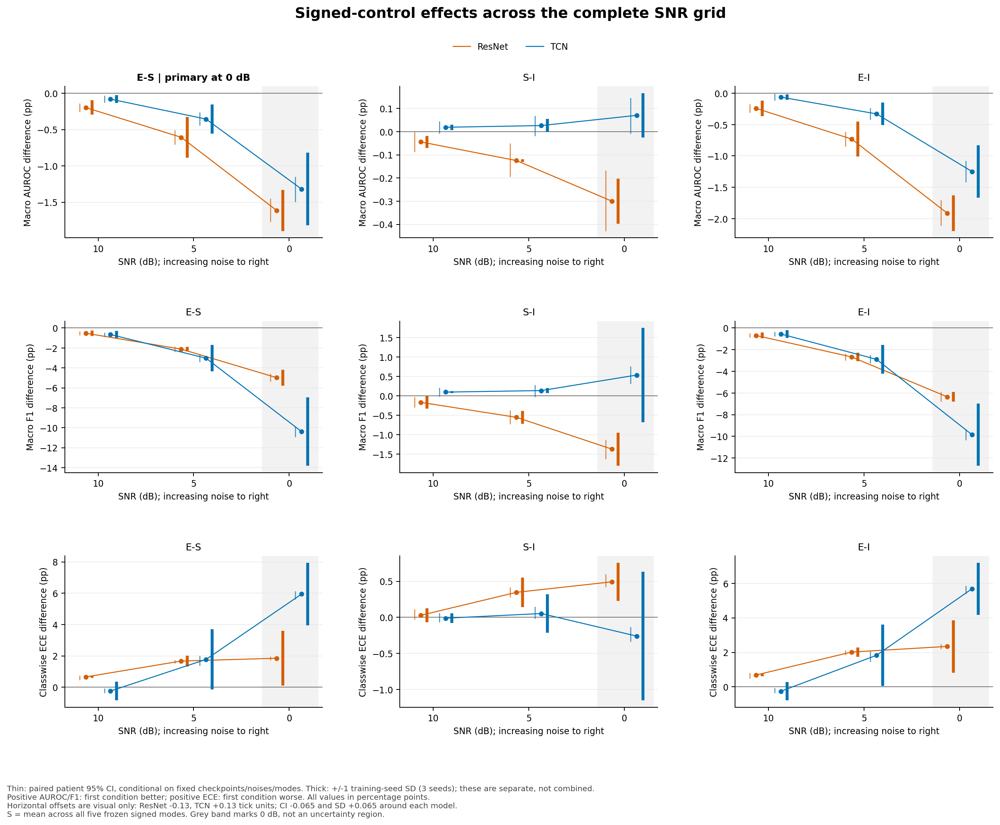
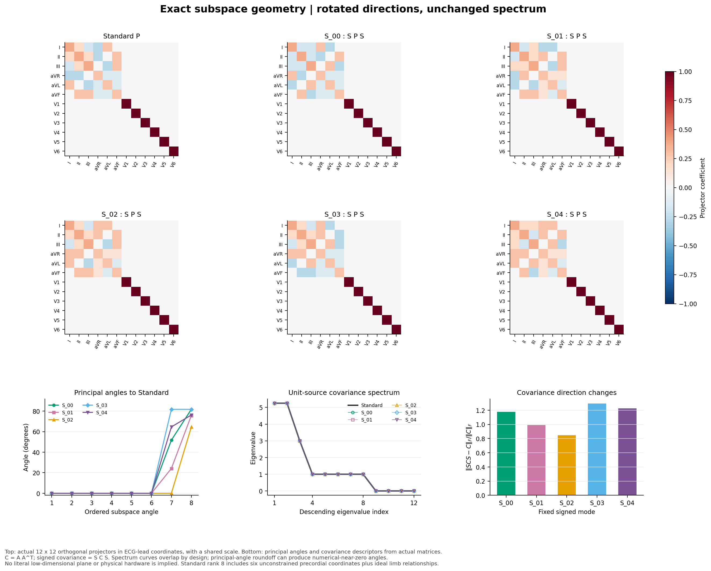

保秩保谱 Signed-Control 机制实验 · 完整测试集报告
一 · 研究问题与预先冻结的比较
研究问题：在保持低秩、总能量、逐导联能量与单导联频谱后，Standard 电极—导联映射在原始 12 导联坐标中的特定方向和符号拓扑是否仍额外改变分类性能？本轮不重新训练、微调、选阈值或选模型。
冻结共同主要比较：ResNet 与 TCN 各自的 0 dB macro-AUROC ΔE−S。预设次要比较为 5/10 dB E−S，以及全部 0/5/10 dB S−I、E−I；F1、ECE、五模式差异与子空间诊断均是描述性次要结果。负 ΔE−S 表示 Standard 的 AUROC 更低。
PTB-XL 官方患者级测试划分：2,158 条 ECG、1,877 名患者；100 Hz、10 秒，float32 [12,1000]，单位 mV。类别顺序 NORM、MI、STTC、CD、HYP；训练 seeds 17、29、43；固定 noise seeds 8128、101、202、303、404、505。五个 signed modes 等权，不是五个独立训练重复。
同一患者 draw、checkpoint、noise seed 和 mode 内先计算指标差；每个训练 seed 内等权平均五模式和六噪声，再平均三个训练 seeds。这里是指标平均，不是概率集成。seed SD 为三个 seed 估计的样本 SD（ddof=1）；noise SD 和 mode SD 分别描述固定六噪声、五模式的变化，不能相加成总 CI。
患者 95% CI 使用字节复用的 2,000 次共同患者簇重采样：抽中患者时包括该患者全部 ECG。缺失类别 AUROC draw 保持 NaN，不重抽；普通均值传播无效性，仅对有效聚合 draw 取 2.5%/97.5% 分位数，并保留无效数。该 CI 条件于已有 checkpoints、固定 noises 与 modes，不覆盖训练、噪声和模式共同变化的总不确定性。
二 · E、S、I 的数学定义
E：nE = Aε；S：Sk = diag(sk)，AS,k = SkA，nS,k = Sk nE；I：沿用冻结的同记录、同导联 RMS 匹配 independent-RMS 噪声。A 是 12×9 理想电极—导联线性映射。
XE = Xclean + α nE；XS,k = Xclean + α Sk nE；XI = Xclean + α nI。clean ECG 完全不翻转；S 在原 Standard float32 base-noise 上按导联乘固定符号，然后使用 E 的同一个 SNR 因子；不重新抽电极源，不为 S 单独标定。现有 base 已按记录标定为 0 dB；目标 SNR 的附加缩放为 float32 10^(−SNR/20)。
C = AAᵀ，CS,k = Sk C Skᵀ；Sk 为正交对角矩阵，因此秩、奇异值、协方差特征值、对角方差、每导联 RMS、每导联 periodogram 与总能量保持。改变的是非对角协方差符号布局和相对 clean/原始导联坐标的子空间方向。上述精确性质适用于设计噪声；float32 加到 clean 后的实际残差另行审计。
ΔE−S = M(E) − mean_k M(Sk)；ΔS−I = mean_k M(Sk) − M(I)；ΔE−I = M(E) − M(I)。S 均值是五个模式指标的等权平均。I 只按逐记录、逐导联 RMS 匹配，不声称与 E/S 逐频率的 periodogram 相同。
三 · 冻结规则与五个完整符号向量
在任何本轮分类预测或结果筛选之前冻结：PCG64 selection_seed=2026092001；固定第一导联符号 +1，余下 11 位独立均匀抽取 −1/+1；负号数限定 4–7；排除全正和已接受重复；仅接受 ||Sk C Skᵀ−C||F / ||C||F > 10⁻¹⁰，按候选顺序保留最先五个。接受依据与 AUROC/F1/ECE 无关；第一位固定消除全局负号等价形式。
向量导联顺序：I, II, III, aVR, aVL, aVF, V1, V2, V3, V4, V5, V6。候选编号从 1 开始；五模式是受限平衡的数学方向控制，而不是可推广随机矩阵总体样本。
| 模式 | 候选编号 | 完整 12 位 sign vector | 负号数 | 协方差相对变化 | AS 数组 SHA-256 |
|---|---|---|---|---|---|
| S_00 | 1 | [+1, -1, +1, -1, -1, -1, -1, +1, -1, +1, +1, -1] | 7 | 1.178468679 | 015ddad910dfb816144a0ae4232d1ffb34a2dbb4f0b14d2ae332b9eadf6d407c |
| S_01 | 2 | [+1, -1, -1, +1, -1, -1, -1, +1, +1, -1, +1, +1] | 6 | 0.992639174 | c5d9275c34020c854a6ddca9c74c9ec173988be6cae714606f487108c8b96da8 |
| S_02 | 5 | [+1, +1, +1, -1, +1, +1, -1, -1, -1, -1, +1, -1] | 6 | 0.845748388 | 47673554920ee57ed15059d69fe86dd3b876d27bc5ee2a86529eef6a71f3f768 |
| S_03 | 8 | [+1, +1, +1, -1, -1, -1, -1, -1, +1, +1, -1, +1] | 6 | 1.295422460 | 2f60322d761afb7413fcb22bfe0e96477724f1bd4caed439dfa815091b2461a2 |
| S_04 | 10 | [+1, +1, -1, -1, +1, +1, +1, -1, -1, +1, -1, -1] | 6 | 1.227244144 | 762c9b236a133e229f711332b7aa1addae5fba9cec11eec95e902cbe3f816c66 |
冻结时间、生成器与逐模式接受理由
{
"frozen_at": "2026-09-19T17:46:09.043817+00:00",
"generator": "numpy.random.Generator(numpy.random.PCG64(seed))",
"selection_used_classification_results": false,
"acceptance": [
{
"mode": "S_00",
"candidate_index": 1,
"reason": "accepted_first_eligible_in_rng_order"
},
{
"mode": "S_01",
"candidate_index": 2,
"reason": "accepted_first_eligible_in_rng_order"
},
{
"mode": "S_02",
"candidate_index": 5,
"reason": "accepted_first_eligible_in_rng_order"
},
{
"mode": "S_03",
"candidate_index": 8,
"reason": "accepted_first_eligible_in_rng_order"
},
{
"mode": "S_04",
"candidate_index": 10,
"reason": "accepted_first_eligible_in_rng_order"
}
]
}四 · 矩阵不变量与实际输入验收
| 模式 | rank(A) | rank(SA) | 奇异值最大误差 | 特征值最大误差 | 对角方差最大误差 | unit-source RMS 最大误差 | 非对角符号差异数 | 非原矩阵 | 通过 |
|---|---|---|---|---|---|---|---|---|---|
| S_00 | 8 | 8 | 0.0000000000000000 | 0.0000000000000000 | 0.0000000000000000 | 0.0000000000000000 | 30 | True | True |
| S_01 | 8 | 8 | 0.0000000000000000 | 0.0000000000000000 | 0.0000000000000000 | 0.0000000000000000 | 28 | True | True |
| S_02 | 8 | 8 | 0.0000000000000000 | 0.0000000000000000 | 0.0000000000000000 | 0.0000000000000000 | 18 | True | True |
| S_03 | 8 | 8 | 0.0000000000000000 | 0.0000000000000000 | 0.0000000000000000 | 0.0000000000000000 | 30 | True | True |
| S_04 | 8 | 8 | 0.0000000000000000 | 0.0000000000000000 | 0.0000000000000000 | 0.0000000000000000 | 32 | True | True |
float64 矩阵验收：秩一致；奇异值、协方差特征值、对角方差与 unit-source RMS 最大绝对误差 ≤10⁻¹²；协方差相对变化 >10⁻¹⁰；矩阵不重复且非对角符号确实变化。下方最大输入误差按每个条件遍历全部记录、三个 SNR、六噪声后取最大值，直接引用原始逐记录 CSV 对应行，不把理论不变量替代实测。
| 条件 | 实际 SNR 误差/dB | 设计 SNR 误差/dB | 实际 RMS 相对误差 | 设计 RMS 相对误差 | 实际逐导联谱误差 | 设计逐导联谱误差 | base 符号最大误差 | 缩放符号最大误差 |
|---|---|---|---|---|---|---|---|---|
| E | 0.000000143624 | 0.000000130689 | 0.000000000000 | 0.000000000000 | 0.000000000000 | 0.000000000000 | 不适用 | 不适用 |
| I | 0.000000139808 | 0.000000130829 | 0.000000042432 | 0.000000013778 | 不适用 | 不适用 | 不适用 | 不适用 |
| S_00 | 0.000000142860 | 0.000000130689 | 0.000000031821 | 0.000000000000 | 0.000000317976 | 0.000000000000 | 0.000000000000 | 0.000000000000 |
| S_01 | 0.000000142832 | 0.000000130689 | 0.000000031821 | 0.000000000000 | 0.000000317976 | 0.000000000000 | 0.000000000000 | 0.000000000000 |
| S_02 | 0.000000141304 | 0.000000130689 | 0.000000031821 | 0.000000000000 | 0.000000317976 | 0.000000000000 | 0.000000000000 | 0.000000000000 |
| S_03 | 0.000000137751 | 0.000000130689 | 0.000000031821 | 0.000000000000 | 0.000000367193 | 0.000000000000 | 0.000000000000 | 0.000000000000 |
| S_04 | 0.000000141573 | 0.000000130689 | 0.000000023553 | 0.000000000000 | 0.000000367193 | 0.000000000000 | 0.000000000000 | 0.000000000000 |
实际残差严格定义为 float64(noisy_float32) − float64(clean_float32)，包含 float32 加法舍入。验收门槛：最终 SNR 误差 ≤10⁻⁴ dB、逐导联 RMS 相对误差 ≤10⁻⁶、E/S periodogram 误差 ≤10⁻⁶。逐导联全频率（含 DC）矩形窗单边 periodogram 的最大绝对 bin 差除以该参考导联峰值，再对导联取最大；不是全导联平均谱，也不是逐 bin 相对误差。零参考谱要求严格为零。I 的谱/符号对比不适用，CSV 用空值和适用标志保留。每个最终输入与每条记录都有 SHA-256；不持久化冗余 noisy/raw 波形。


Standard A、AAᵀ、完整谱与投影检查；全部五个矩阵见 matrices.json
{
"standard": {
"matrix": [
[
-1.0,
1.0,
0.0,
0.0,
0.0,
0.0,
0.0,
0.0,
0.0
],
[
-1.0,
0.0,
1.0,
0.0,
0.0,
0.0,
0.0,
0.0,
0.0
],
[
0.0,
-1.0,
1.0,
0.0,
0.0,
0.0,
0.0,
0.0,
0.0
],
[
1.0,
-0.5,
-0.5,
0.0,
0.0,
0.0,
0.0,
0.0,
0.0
],
[
-0.5,
1.0,
-0.5,
0.0,
0.0,
0.0,
0.0,
0.0,
0.0
],
[
-0.5,
-0.5,
1.0,
0.0,
0.0,
0.0,
0.0,
0.0,
0.0
],
[
-0.3333333333333333,
-0.3333333333333333,
-0.3333333333333333,
1.0,
0.0,
0.0,
0.0,
0.0,
0.0
],
[
-0.3333333333333333,
-0.3333333333333333,
-0.3333333333333333,
0.0,
1.0,
0.0,
0.0,
0.0,
0.0
],
[
-0.3333333333333333,
-0.3333333333333333,
-0.3333333333333333,
0.0,
0.0,
1.0,
0.0,
0.0,
0.0
],
[
-0.3333333333333333,
-0.3333333333333333,
-0.3333333333333333,
0.0,
0.0,
0.0,
1.0,
0.0,
0.0
],
[
-0.3333333333333333,
-0.3333333333333333,
-0.3333333333333333,
0.0,
0.0,
0.0,
0.0,
1.0,
0.0
],
[
-0.3333333333333333,
-0.3333333333333333,
-0.3333333333333333,
0.0,
0.0,
0.0,
0.0,
0.0,
1.0
]
],
"covariance": [
[
2.0,
1.0,
-1.0,
-1.5,
1.5,
0.0,
0.0,
0.0,
0.0,
0.0,
0.0,
0.0
],
[
1.0,
2.0,
1.0,
-1.5,
0.0,
1.5,
0.0,
0.0,
0.0,
0.0,
0.0,
0.0
],
[
-1.0,
1.0,
2.0,
0.0,
-1.5,
1.5,
0.0,
0.0,
0.0,
0.0,
0.0,
0.0
],
[
-1.5,
-1.5,
0.0,
1.5,
-0.75,
-0.75,
0.0,
0.0,
0.0,
0.0,
0.0,
0.0
],
[
1.5,
0.0,
-1.5,
-0.75,
1.5,
-0.75,
0.0,
0.0,
0.0,
0.0,
0.0,
0.0
],
[
0.0,
1.5,
1.5,
-0.75,
-0.75,
1.5,
0.0,
0.0,
0.0,
0.0,
0.0,
0.0
],
[
0.0,
0.0,
0.0,
0.0,
0.0,
0.0,
1.3333333333333333,
0.3333333333333333,
0.3333333333333333,
0.3333333333333333,
0.3333333333333333,
0.3333333333333333
],
[
0.0,
0.0,
0.0,
0.0,
0.0,
0.0,
0.3333333333333333,
1.3333333333333333,
0.3333333333333333,
0.3333333333333333,
0.3333333333333333,
0.3333333333333333
],
[
0.0,
0.0,
0.0,
0.0,
0.0,
0.0,
0.3333333333333333,
0.3333333333333333,
1.3333333333333335,
0.3333333333333333,
0.3333333333333333,
0.3333333333333333
],
[
0.0,
0.0,
0.0,
0.0,
0.0,
0.0,
0.3333333333333333,
0.3333333333333333,
0.3333333333333333,
1.3333333333333335,
0.3333333333333333,
0.3333333333333333
],
[
0.0,
0.0,
0.0,
0.0,
0.0,
0.0,
0.3333333333333333,
0.3333333333333333,
0.3333333333333333,
0.3333333333333333,
1.3333333333333335,
0.3333333333333333
],
[
0.0,
0.0,
0.0,
0.0,
0.0,
0.0,
0.3333333333333333,
0.3333333333333333,
0.3333333333333333,
0.3333333333333333,
0.3333333333333333,
1.3333333333333333
]
],
"singular_values": [
2.2912878474779204,
2.2912878474779204,
1.7320508075688776,
1.0,
1.0,
1.0,
0.9999999999999999,
0.9999999999999998,
2.9495044061721597e-16
],
"eigenvalues": [
-4.475184965024774e-16,
-1.2267470927665599e-17,
4.077352230886689e-16,
8.566761516504993e-16,
0.9999999999999999,
1.0,
1.0,
1.0000000000000004,
1.0000000000000009,
3.0,
5.25,
5.25
],
"rank": 8,
"array_sha256": "97cf4d3840ed7e74ecded131777452d4edf8ce42323a7efd50d32b40752b28ef"
},
"projection_checks": {
"symmetry_fro": 1.2393264097671234e-15,
"idempotence_fro": 1.2434468376125226e-15,
"rank": 8,
"standard_annihilation_fro": 2.282609565956885e-15
}
}五 · 完整 AUROC 结果
下表完整保留 2 模型×3 SNR×3 对比的 18 行，不删除反向、接近零或不稳定结果。差值与 SD/CI 以百分点（pp）报告；源 CSV 是原始 0–1 单位。AUROC 正差值代表第一个条件更好。0 dB E−S 是两个共同主要终点，其余均为事前指定次要比较。
| 模型 | SNR / dB | 对比 | 均值 / pp | 训练 seed SD / pp | 患者 CI 下限 / pp | 患者 CI 上限 / pp | noise SD / pp | mode SD / pp | draw 数 | 无效 draw 数 |
|---|---|---|---|---|---|---|---|---|---|---|
| ResNet | 0 | E-I | -1.913 | 0.284 | -2.113 | -1.702 | 0.095 | 0.000 | 2000 | 0 |
| ResNet | 0 | E-S | -1.613 | 0.282 | -1.771 | -1.446 | 0.048 | 1.183 | 2000 | 0 |
| ResNet | 0 | S-I | -0.300 | 0.097 | -0.429 | -0.168 | 0.087 | 1.183 | 2000 | 0 |
| ResNet | 5 | E-I | -0.731 | 0.280 | -0.849 | -0.610 | 0.137 | 0.000 | 2000 | 0 |
| ResNet | 5 | E-S | -0.606 | 0.283 | -0.705 | -0.506 | 0.093 | 0.466 | 2000 | 0 |
| ResNet | 5 | S-I | -0.125 | 0.006 | -0.195 | -0.050 | 0.056 | 0.466 | 2000 | 0 |
| ResNet | 10 | E-I | -0.241 | 0.125 | -0.306 | -0.174 | 0.109 | 0.000 | 2000 | 0 |
| ResNet | 10 | E-S | -0.196 | 0.099 | -0.257 | -0.140 | 0.078 | 0.163 | 2000 | 0 |
| ResNet | 10 | S-I | -0.044 | 0.026 | -0.087 | -0.002 | 0.035 | 0.163 | 2000 | 0 |
| TCN | 0 | E-I | -1.248 | 0.417 | -1.419 | -1.080 | 0.114 | 0.000 | 2000 | 0 |
| TCN | 0 | E-S | -1.319 | 0.500 | -1.495 | -1.149 | 0.096 | 0.604 | 2000 | 0 |
| TCN | 0 | S-I | +0.070 | 0.095 | -0.008 | +0.145 | 0.072 | 0.604 | 2000 | 0 |
| TCN | 5 | E-I | -0.328 | 0.181 | -0.420 | -0.235 | 0.076 | 0.000 | 2000 | 0 |
| TCN | 5 | E-S | -0.355 | 0.199 | -0.443 | -0.263 | 0.055 | 0.192 | 2000 | 0 |
| TCN | 5 | S-I | +0.026 | 0.028 | -0.018 | +0.069 | 0.032 | 0.192 | 2000 | 0 |
| TCN | 10 | E-I | -0.061 | 0.042 | -0.115 | -0.008 | 0.052 | 0.000 | 2000 | 0 |
| TCN | 10 | E-S | -0.080 | 0.052 | -0.129 | -0.031 | 0.041 | 0.053 | 2000 | 0 |
| TCN | 10 | S-I | +0.019 | 0.012 | -0.008 | +0.045 | 0.015 | 0.053 | 2000 | 0 |
![All three 0-dB contrasts and all three metrics for both co-primary architectures. Primary estimand: each architecture's 0-dB E-S macro AUROC. Points average paired metric differences, not probabilities. Thin: paired patient 95% CI, conditional on fixed checkpoints/noises/modes. Thick: +/-1 training-seed SD (3 seeds); these are separate, not combined. Positive AUROC/F1: first condition better; positive ECE: first condition worse. Five individual fixed-mode estimates and three training-seed estimates are distinguished; redundant mode copies of E-I are omitted.](../figures/full/signed_control_structure_effects.png)

| 模型 | 训练 seed | 0 dB E−S / pp |
|---|---|---|
| ResNet | 17 | -1.924 |
| ResNet | 29 | -1.542 |
| ResNet | 43 | -1.373 |
| TCN | 17 | -0.789 |
| TCN | 29 | -1.783 |
| TCN | 43 | -1.385 |
六 · F1 与 ECE 补充结果
方向警告：AUROC/F1 的正差值表示第一个条件更好；ECE 的正差值表示第一个条件校准更差，不能沿用 AUROC 的优劣方向。F1 沿用每个 checkpoint 的原 clean-validation 阈值（比较为 ≥，zero_division=0）；ECE 为五类正类概率各自 15 个等宽 bin 的 ECE 再作宏平均，不是 top-label ECE。
macro-F1：完整 18 行
| 模型 | SNR / dB | 对比 | 均值 / pp | 训练 seed SD / pp | 患者 CI 下限 / pp | 患者 CI 上限 / pp | noise SD / pp | mode SD / pp | draw 数 | 无效 draw 数 |
|---|---|---|---|---|---|---|---|---|---|---|
| ResNet | 0 | E-I | -6.353 | 0.449 | -6.811 | -5.898 | 0.277 | 0.000 | 2000 | 0 |
| ResNet | 0 | E-S | -4.978 | 0.804 | -5.370 | -4.579 | 0.163 | 3.192 | 2000 | 0 |
| ResNet | 0 | S-I | -1.375 | 0.427 | -1.631 | -1.131 | 0.231 | 3.192 | 2000 | 0 |
| ResNet | 5 | E-I | -2.673 | 0.394 | -2.987 | -2.353 | 0.190 | 0.000 | 2000 | 0 |
| ResNet | 5 | E-S | -2.118 | 0.232 | -2.380 | -1.848 | 0.171 | 1.610 | 2000 | 0 |
| ResNet | 5 | S-I | -0.555 | 0.163 | -0.732 | -0.371 | 0.202 | 1.610 | 2000 | 0 |
| ResNet | 10 | E-I | -0.690 | 0.273 | -0.891 | -0.483 | 0.147 | 0.000 | 2000 | 0 |
| ResNet | 10 | E-S | -0.520 | 0.264 | -0.703 | -0.342 | 0.087 | 0.492 | 2000 | 0 |
| ResNet | 10 | S-I | -0.170 | 0.158 | -0.305 | -0.035 | 0.171 | 0.492 | 2000 | 0 |
| TCN | 0 | E-I | -9.851 | 2.858 | -10.356 | -9.347 | 0.225 | 0.000 | 2000 | 0 |
| TCN | 0 | E-S | -10.386 | 3.415 | -10.911 | -9.839 | 0.171 | 4.928 | 2000 | 0 |
| TCN | 0 | S-I | +0.535 | 1.212 | +0.313 | +0.758 | 0.155 | 4.928 | 2000 | 0 |
| TCN | 5 | E-I | -2.889 | 1.342 | -3.261 | -2.497 | 0.171 | 0.000 | 2000 | 0 |
| TCN | 5 | E-S | -3.024 | 1.334 | -3.393 | -2.627 | 0.110 | 1.519 | 2000 | 0 |
| TCN | 5 | S-I | +0.135 | 0.061 | -0.026 | +0.281 | 0.158 | 1.519 | 2000 | 0 |
| TCN | 10 | E-I | -0.557 | 0.356 | -0.781 | -0.325 | 0.162 | 0.000 | 2000 | 0 |
| TCN | 10 | E-S | -0.652 | 0.343 | -0.865 | -0.430 | 0.103 | 0.371 | 2000 | 0 |
| TCN | 10 | S-I | +0.095 | 0.026 | -0.017 | +0.209 | 0.137 | 0.371 | 2000 | 0 |
macro classwise ECE：完整 18 行；正差表示更差
| 模型 | SNR / dB | 对比 | 均值 / pp | 训练 seed SD / pp | 患者 CI 下限 / pp | 患者 CI 上限 / pp | noise SD / pp | mode SD / pp | draw 数 | 无效 draw 数 |
|---|---|---|---|---|---|---|---|---|---|---|
| ResNet | 0 | E-I | +2.346 | 1.524 | +2.204 | +2.491 | 0.140 | 0.000 | 2000 | 0 |
| ResNet | 0 | E-S | +1.853 | 1.753 | +1.713 | +1.964 | 0.111 | 1.272 | 2000 | 0 |
| ResNet | 0 | S-I | +0.493 | 0.265 | +0.421 | +0.601 | 0.051 | 1.272 | 2000 | 0 |
| ResNet | 5 | E-I | +2.022 | 0.270 | +1.857 | +2.122 | 0.079 | 0.000 | 2000 | 0 |
| ResNet | 5 | E-S | +1.675 | 0.340 | +1.530 | +1.757 | 0.062 | 1.190 | 2000 | 0 |
| ResNet | 5 | S-I | +0.347 | 0.207 | +0.276 | +0.418 | 0.060 | 1.190 | 2000 | 0 |
| ResNet | 10 | E-I | +0.690 | 0.077 | +0.490 | +0.821 | 0.079 | 0.000 | 2000 | 0 |
| ResNet | 10 | E-S | +0.661 | 0.050 | +0.468 | +0.751 | 0.032 | 0.373 | 2000 | 0 |
| ResNet | 10 | S-I | +0.030 | 0.098 | -0.029 | +0.117 | 0.082 | 0.373 | 2000 | 0 |
| TCN | 0 | E-I | +5.686 | 1.510 | +5.397 | +5.863 | 0.095 | 0.000 | 2000 | 0 |
| TCN | 0 | E-S | +5.946 | 2.000 | +5.606 | +6.128 | 0.059 | 3.614 | 2000 | 0 |
| TCN | 0 | S-I | -0.260 | 0.891 | -0.335 | -0.130 | 0.043 | 3.614 | 2000 | 0 |
| TCN | 5 | E-I | +1.831 | 1.770 | +1.461 | +2.068 | 0.080 | 0.000 | 2000 | 0 |
| TCN | 5 | E-S | +1.778 | 1.927 | +1.374 | +2.019 | 0.076 | 0.951 | 2000 | 0 |
| TCN | 5 | S-I | +0.053 | 0.267 | -0.019 | +0.146 | 0.059 | 0.951 | 2000 | 0 |
| TCN | 10 | E-I | -0.249 | 0.532 | -0.353 | -0.056 | 0.057 | 0.000 | 2000 | 0 |
| TCN | 10 | E-S | -0.238 | 0.597 | -0.350 | -0.050 | 0.041 | 0.068 | 2000 | 0 |
| TCN | 10 | S-I | -0.011 | 0.066 | -0.070 | +0.059 | 0.060 | 0.068 | 2000 | 0 |
七 · 子空间 q(v) 诊断
P = AA†，Q = I12−P；q(v) = ||Qv||F² / ||v||F²。float64 SVD/pseudoinverse 使用 rcond=10⁻¹²；P 对称性与幂等误差要求 <10⁻¹⁰。分母为零时 q=null 并计数，不加 ε、不填零。
q(clean) 每记录只计算一次；E_noise/S_noise/I_noise 使用实际 float32 加法后的 float64 残差，E_input/S_input/I_input 使用完整 noisy 输入。所有 q 都相对 Standard 的 P，不使用各模式自己的投影。因此 S_noise 的非零 q 是方向控制设计的一部分，不是实现错误；E_noise 的有限浮点残差不必严格为零。
下表按 object×SNR×noise seed×mode 分组，每组 mean 是有效记录 q 的算术平均，SD 为 ddof=1，中位数和 Q1/Q3 为线性分位数，IQR=Q3−Q1；null 排除于统计但明确计数。若另行汇总对象的总体描述均值，须先在相同 SNR 下等权平均六个 noise seed 的组均值，S 再等权平均五个 mode；clean 只计一次。该均值聚合不是对合并波形求 q，也不是患者加权，更不能通过平均各组中位数/IQR 得到合并分布的中位数/IQR。这里保留全部 253 组，避免模糊聚合权重。
q 分布图另以每记录为单位：E/I 及每个 S mode 先平均六个固定 noise realizations，S 总均值再平均五个固定 modes；随后在 ECG 记录间绘制描述性分布。箱图不是患者 CI，也不把各噪声重复当独立患者；遇到 null 不填零，图形的实际有效数与处理口径见图注及原始分组/逐记录 CSV。
全部对象、SNR、noise 与 mode 的分组 q 摘要
| 对象 | SNR/dB | noise seed | mode | mean | SD | median | Q1 | Q3 | IQR | min | max | 有效记录 | null记录 |
|---|---|---|---|---|---|---|---|---|---|---|---|---|---|
| clean | — | — | — | 1.3662e-06 | 8.8963e-07 | 1.1974e-06 | 7.8199e-07 | 1.7405e-06 | 9.5853e-07 | 2.4954e-08 | 1.1906e-05 | 2158 | 0 |
| E_noise | 0 | 8128 | — | 6.1844e-16 | 6.9503e-17 | 6.0820e-16 | 5.6972e-16 | 6.5799e-16 | 8.8270e-17 | 4.5249e-16 | 9.2216e-16 | 2158 | 0 |
| E_input | 0 | 8128 | — | 6.8317e-07 | 4.4466e-07 | 5.9940e-07 | 3.9016e-07 | 8.6824e-07 | 4.7807e-07 | 1.2456e-08 | 5.8942e-06 | 2158 | 0 |
| I_noise | 0 | 8128 | — | 3.7430e-01 | 8.7199e-03 | 3.7418e-01 | 3.6843e-01 | 3.8018e-01 | 1.1745e-02 | 3.4622e-01 | 4.0167e-01 | 2158 | 0 |
| I_input | 0 | 8128 | — | 1.8717e-01 | 4.7599e-03 | 1.8712e-01 | 1.8397e-01 | 1.9042e-01 | 6.4448e-03 | 1.7071e-01 | 2.0311e-01 | 2158 | 0 |
| S_noise | 0 | 8128 | S_00 | 4.5282e-01 | 8.7640e-03 | 4.5284e-01 | 4.4679e-01 | 4.5879e-01 | 1.1998e-02 | 4.2482e-01 | 4.8464e-01 | 2158 | 0 |
| S_input | 0 | 8128 | S_00 | 2.2645e-01 | 4.7236e-03 | 2.2649e-01 | 2.2322e-01 | 2.2973e-01 | 6.5045e-03 | 2.1154e-01 | 2.4465e-01 | 2158 | 0 |
| S_noise | 0 | 8128 | S_01 | 3.1381e-01 | 9.4759e-03 | 3.1380e-01 | 3.0709e-01 | 3.2025e-01 | 1.3153e-02 | 2.8478e-01 | 3.5198e-01 | 2158 | 0 |
| S_input | 0 | 8128 | S_01 | 1.5691e-01 | 4.9543e-03 | 1.5693e-01 | 1.5350e-01 | 1.6019e-01 | 6.6889e-03 | 1.4175e-01 | 1.7467e-01 | 2158 | 0 |
| S_noise | 0 | 8128 | S_02 | 2.3150e-01 | 9.1697e-03 | 2.3134e-01 | 2.2539e-01 | 2.3781e-01 | 1.2419e-02 | 1.9370e-01 | 2.6245e-01 | 2158 | 0 |
| S_input | 0 | 8128 | S_02 | 1.1576e-01 | 4.7637e-03 | 1.1570e-01 | 1.1254e-01 | 1.1898e-01 | 6.4370e-03 | 9.6846e-02 | 1.3267e-01 | 2158 | 0 |
| S_noise | 0 | 8128 | S_03 | 5.5575e-01 | 9.8986e-03 | 5.5599e-01 | 5.4890e-01 | 5.6244e-01 | 1.3547e-02 | 5.2369e-01 | 5.9215e-01 | 2158 | 0 |
| S_input | 0 | 8128 | S_03 | 2.7793e-01 | 5.3546e-03 | 2.7796e-01 | 2.7438e-01 | 2.8153e-01 | 7.1467e-03 | 2.6009e-01 | 2.9777e-01 | 2158 | 0 |
| S_noise | 0 | 8128 | S_04 | 4.9916e-01 | 8.9624e-03 | 4.9925e-01 | 4.9293e-01 | 5.0516e-01 | 1.2233e-02 | 4.6993e-01 | 5.3141e-01 | 2158 | 0 |
| S_input | 0 | 8128 | S_04 | 2.4962e-01 | 4.8796e-03 | 2.4972e-01 | 2.4632e-01 | 2.5292e-01 | 6.5997e-03 | 2.3353e-01 | 2.6895e-01 | 2158 | 0 |
| E_noise | 0 | 101 | — | 6.1872e-16 | 6.8983e-17 | 6.1160e-16 | 5.6985e-16 | 6.5691e-16 | 8.7053e-17 | 4.6126e-16 | 9.2283e-16 | 2158 | 0 |
| E_input | 0 | 101 | — | 6.8311e-07 | 4.4499e-07 | 5.9926e-07 | 3.9021e-07 | 8.6847e-07 | 4.7826e-07 | 1.2492e-08 | 5.9308e-06 | 2158 | 0 |
| I_noise | 0 | 101 | — | 3.7463e-01 | 8.5110e-03 | 3.7472e-01 | 3.6880e-01 | 3.8049e-01 | 1.1691e-02 | 3.4625e-01 | 4.0524e-01 | 2158 | 0 |
| I_input | 0 | 101 | — | 1.8730e-01 | 4.6182e-03 | 1.8738e-01 | 1.8413e-01 | 1.9043e-01 | 6.2940e-03 | 1.7125e-01 | 2.0194e-01 | 2158 | 0 |
| S_noise | 0 | 101 | S_00 | 4.5306e-01 | 8.9998e-03 | 4.5309e-01 | 4.4725e-01 | 4.5918e-01 | 1.1928e-02 | 4.2240e-01 | 4.8316e-01 | 2158 | 0 |
| S_input | 0 | 101 | S_00 | 2.2654e-01 | 4.8535e-03 | 2.2657e-01 | 2.2324e-01 | 2.2990e-01 | 6.6647e-03 | 2.1063e-01 | 2.4463e-01 | 2158 | 0 |
| S_noise | 0 | 101 | S_01 | 3.1400e-01 | 9.6319e-03 | 3.1384e-01 | 3.0766e-01 | 3.2040e-01 | 1.2739e-02 | 2.7550e-01 | 3.4382e-01 | 2158 | 0 |
| S_input | 0 | 101 | S_01 | 1.5703e-01 | 5.0255e-03 | 1.5694e-01 | 1.5370e-01 | 1.6051e-01 | 6.8172e-03 | 1.3550e-01 | 1.7272e-01 | 2158 | 0 |
| S_noise | 0 | 101 | S_02 | 2.3175e-01 | 9.1494e-03 | 2.3163e-01 | 2.2556e-01 | 2.3812e-01 | 1.2556e-02 | 1.9204e-01 | 2.5913e-01 | 2158 | 0 |
| S_input | 0 | 101 | S_02 | 1.1588e-01 | 4.6939e-03 | 1.1576e-01 | 1.1266e-01 | 1.1895e-01 | 6.2917e-03 | 9.6610e-02 | 1.3057e-01 | 2158 | 0 |
| S_noise | 0 | 101 | S_03 | 5.5615e-01 | 9.9241e-03 | 5.5623e-01 | 5.4938e-01 | 5.6306e-01 | 1.3677e-02 | 5.2126e-01 | 5.9172e-01 | 2158 | 0 |
| S_input | 0 | 101 | S_03 | 2.7818e-01 | 5.3568e-03 | 2.7824e-01 | 2.7456e-01 | 2.8180e-01 | 7.2438e-03 | 2.5780e-01 | 2.9723e-01 | 2158 | 0 |
| S_noise | 0 | 101 | S_04 | 4.9951e-01 | 9.0418e-03 | 4.9938e-01 | 4.9339e-01 | 5.0584e-01 | 1.2454e-02 | 4.6894e-01 | 5.2994e-01 | 2158 | 0 |
| S_input | 0 | 101 | S_04 | 2.4979e-01 | 4.8773e-03 | 2.4981e-01 | 2.4639e-01 | 2.5316e-01 | 6.7691e-03 | 2.3310e-01 | 2.6590e-01 | 2158 | 0 |
| E_noise | 0 | 202 | — | 6.1822e-16 | 6.8599e-17 | 6.0918e-16 | 5.6881e-16 | 6.5900e-16 | 9.0189e-17 | 4.6117e-16 | 9.3593e-16 | 2158 | 0 |
| E_input | 0 | 202 | — | 6.8352e-07 | 4.4561e-07 | 5.9850e-07 | 3.9047e-07 | 8.6976e-07 | 4.7929e-07 | 1.2428e-08 | 6.0068e-06 | 2158 | 0 |
| I_noise | 0 | 202 | — | 3.7452e-01 | 8.6434e-03 | 3.7434e-01 | 3.6875e-01 | 3.8071e-01 | 1.1960e-02 | 3.4652e-01 | 4.0394e-01 | 2158 | 0 |
| I_input | 0 | 202 | — | 1.8729e-01 | 4.6654e-03 | 1.8724e-01 | 1.8414e-01 | 1.9052e-01 | 6.3876e-03 | 1.7172e-01 | 2.0386e-01 | 2158 | 0 |
| S_noise | 0 | 202 | S_00 | 4.5283e-01 | 9.2794e-03 | 4.5278e-01 | 4.4644e-01 | 4.5895e-01 | 1.2513e-02 | 4.1655e-01 | 4.8579e-01 | 2158 | 0 |
| S_input | 0 | 202 | S_00 | 2.2651e-01 | 4.9609e-03 | 2.2640e-01 | 2.2316e-01 | 2.2973e-01 | 6.5733e-03 | 2.0774e-01 | 2.4327e-01 | 2158 | 0 |
| S_noise | 0 | 202 | S_01 | 3.1376e-01 | 9.6697e-03 | 3.1340e-01 | 3.0757e-01 | 3.2044e-01 | 1.2871e-02 | 2.7823e-01 | 3.5019e-01 | 2158 | 0 |
| S_input | 0 | 202 | S_01 | 1.5691e-01 | 5.0354e-03 | 1.5683e-01 | 1.5344e-01 | 1.6043e-01 | 6.9857e-03 | 1.3961e-01 | 1.7571e-01 | 2158 | 0 |
| S_noise | 0 | 202 | S_02 | 2.3147e-01 | 9.1830e-03 | 2.3139e-01 | 2.2530e-01 | 2.3779e-01 | 1.2481e-02 | 2.0119e-01 | 2.6720e-01 | 2158 | 0 |
| S_input | 0 | 202 | S_02 | 1.1574e-01 | 4.7954e-03 | 1.1567e-01 | 1.1254e-01 | 1.1893e-01 | 6.3905e-03 | 9.9409e-02 | 1.3286e-01 | 2158 | 0 |
| S_noise | 0 | 202 | S_03 | 5.5578e-01 | 1.0214e-02 | 5.5604e-01 | 5.4867e-01 | 5.6287e-01 | 1.4199e-02 | 5.2392e-01 | 5.8820e-01 | 2158 | 0 |
| S_input | 0 | 202 | S_03 | 2.7796e-01 | 5.4607e-03 | 2.7797e-01 | 2.7422e-01 | 2.8172e-01 | 7.4930e-03 | 2.6000e-01 | 2.9506e-01 | 2158 | 0 |
| S_noise | 0 | 202 | S_04 | 4.9919e-01 | 9.2875e-03 | 4.9916e-01 | 4.9298e-01 | 5.0556e-01 | 1.2579e-02 | 4.7090e-01 | 5.2963e-01 | 2158 | 0 |
| S_input | 0 | 202 | S_04 | 2.4958e-01 | 5.1007e-03 | 2.4959e-01 | 2.4608e-01 | 2.5313e-01 | 7.0540e-03 | 2.3257e-01 | 2.6639e-01 | 2158 | 0 |
| E_noise | 0 | 303 | — | 6.1946e-16 | 6.9422e-17 | 6.1080e-16 | 5.7044e-16 | 6.6094e-16 | 9.0500e-17 | 4.5107e-16 | 9.1497e-16 | 2158 | 0 |
| E_input | 0 | 303 | — | 6.8301e-07 | 4.4427e-07 | 5.9698e-07 | 3.9108e-07 | 8.6523e-07 | 4.7415e-07 | 1.2550e-08 | 5.8484e-06 | 2158 | 0 |
| I_noise | 0 | 303 | — | 3.7427e-01 | 8.8810e-03 | 3.7442e-01 | 3.6834e-01 | 3.8023e-01 | 1.1885e-02 | 3.4814e-01 | 4.0197e-01 | 2158 | 0 |
| I_input | 0 | 303 | — | 1.8715e-01 | 4.7679e-03 | 1.8724e-01 | 1.8389e-01 | 1.9046e-01 | 6.5691e-03 | 1.7261e-01 | 2.0192e-01 | 2158 | 0 |
| S_noise | 0 | 303 | S_00 | 4.5300e-01 | 9.1570e-03 | 4.5293e-01 | 4.4716e-01 | 4.5913e-01 | 1.1962e-02 | 4.2264e-01 | 4.8301e-01 | 2158 | 0 |
| S_input | 0 | 303 | S_00 | 2.2655e-01 | 4.8398e-03 | 2.2649e-01 | 2.2329e-01 | 2.2980e-01 | 6.5147e-03 | 2.1075e-01 | 2.4228e-01 | 2158 | 0 |
| S_noise | 0 | 303 | S_01 | 3.1411e-01 | 9.6540e-03 | 3.1392e-01 | 3.0757e-01 | 3.2068e-01 | 1.3111e-02 | 2.8123e-01 | 3.4496e-01 | 2158 | 0 |
| S_input | 0 | 303 | S_01 | 1.5711e-01 | 5.0474e-03 | 1.5708e-01 | 1.5366e-01 | 1.6059e-01 | 6.9290e-03 | 1.4142e-01 | 1.7433e-01 | 2158 | 0 |
| S_noise | 0 | 303 | S_02 | 2.3155e-01 | 9.1815e-03 | 2.3124e-01 | 2.2505e-01 | 2.3769e-01 | 1.2642e-02 | 2.0428e-01 | 2.6223e-01 | 2158 | 0 |
| S_input | 0 | 303 | S_02 | 1.1578e-01 | 4.8015e-03 | 1.1561e-01 | 1.1235e-01 | 1.1906e-01 | 6.7100e-03 | 1.0198e-01 | 1.3118e-01 | 2158 | 0 |
| S_noise | 0 | 303 | S_03 | 5.5575e-01 | 1.0334e-02 | 5.5575e-01 | 5.4875e-01 | 5.6277e-01 | 1.4020e-02 | 5.2022e-01 | 5.8864e-01 | 2158 | 0 |
| S_input | 0 | 303 | S_03 | 2.7784e-01 | 5.5599e-03 | 2.7775e-01 | 2.7401e-01 | 2.8164e-01 | 7.6309e-03 | 2.5990e-01 | 2.9772e-01 | 2158 | 0 |
| S_noise | 0 | 303 | S_04 | 4.9915e-01 | 9.3422e-03 | 4.9926e-01 | 4.9285e-01 | 5.0556e-01 | 1.2709e-02 | 4.6806e-01 | 5.2941e-01 | 2158 | 0 |
| S_input | 0 | 303 | S_04 | 2.4955e-01 | 5.0924e-03 | 2.4961e-01 | 2.4621e-01 | 2.5302e-01 | 6.8126e-03 | 2.3336e-01 | 2.6804e-01 | 2158 | 0 |
| E_noise | 0 | 404 | — | 6.1907e-16 | 6.8726e-17 | 6.1027e-16 | 5.7033e-16 | 6.5711e-16 | 8.6779e-17 | 4.6279e-16 | 8.9420e-16 | 2158 | 0 |
| E_input | 0 | 404 | — | 6.8346e-07 | 4.4557e-07 | 5.9847e-07 | 3.9040e-07 | 8.7307e-07 | 4.8267e-07 | 1.2477e-08 | 5.8215e-06 | 2158 | 0 |
| I_noise | 0 | 404 | — | 3.7452e-01 | 8.8093e-03 | 3.7443e-01 | 3.6868e-01 | 3.8041e-01 | 1.1724e-02 | 3.3725e-01 | 4.0417e-01 | 2158 | 0 |
| I_input | 0 | 404 | — | 1.8726e-01 | 4.7338e-03 | 1.8724e-01 | 1.8413e-01 | 1.9034e-01 | 6.2098e-03 | 1.6866e-01 | 2.0557e-01 | 2158 | 0 |
| S_noise | 0 | 404 | S_00 | 4.5295e-01 | 9.2286e-03 | 4.5297e-01 | 4.4659e-01 | 4.5912e-01 | 1.2539e-02 | 4.2196e-01 | 4.8337e-01 | 2158 | 0 |
| S_input | 0 | 404 | S_00 | 2.2650e-01 | 4.9342e-03 | 2.2645e-01 | 2.2319e-01 | 2.2974e-01 | 6.5505e-03 | 2.1010e-01 | 2.4329e-01 | 2158 | 0 |
| S_noise | 0 | 404 | S_01 | 3.1431e-01 | 9.7650e-03 | 3.1433e-01 | 3.0787e-01 | 3.2094e-01 | 1.3065e-02 | 2.8385e-01 | 3.4655e-01 | 2158 | 0 |
| S_input | 0 | 404 | S_01 | 1.5723e-01 | 5.1150e-03 | 1.5718e-01 | 1.5391e-01 | 1.6057e-01 | 6.6535e-03 | 1.4129e-01 | 1.7564e-01 | 2158 | 0 |
| S_noise | 0 | 404 | S_02 | 2.3205e-01 | 9.3004e-03 | 2.3204e-01 | 2.2575e-01 | 2.3828e-01 | 1.2534e-02 | 1.9931e-01 | 2.6673e-01 | 2158 | 0 |
| S_input | 0 | 404 | S_02 | 1.1602e-01 | 4.8164e-03 | 1.1604e-01 | 1.1277e-01 | 1.1917e-01 | 6.4000e-03 | 1.0030e-01 | 1.3266e-01 | 2158 | 0 |
| S_noise | 0 | 404 | S_03 | 5.5602e-01 | 1.0327e-02 | 5.5598e-01 | 5.4907e-01 | 5.6319e-01 | 1.4123e-02 | 5.2313e-01 | 5.8909e-01 | 2158 | 0 |
| S_input | 0 | 404 | S_03 | 2.7807e-01 | 5.6132e-03 | 2.7815e-01 | 2.7425e-01 | 2.8180e-01 | 7.5530e-03 | 2.6187e-01 | 2.9671e-01 | 2158 | 0 |
| S_noise | 0 | 404 | S_04 | 4.9933e-01 | 9.3735e-03 | 4.9932e-01 | 4.9285e-01 | 5.0565e-01 | 1.2800e-02 | 4.6875e-01 | 5.3045e-01 | 2158 | 0 |
| S_input | 0 | 404 | S_04 | 2.4962e-01 | 5.1466e-03 | 2.4953e-01 | 2.4603e-01 | 2.5297e-01 | 6.9404e-03 | 2.3107e-01 | 2.6958e-01 | 2158 | 0 |
| E_noise | 0 | 505 | — | 6.1900e-16 | 6.9439e-17 | 6.1108e-16 | 5.7008e-16 | 6.5820e-16 | 8.8114e-17 | 4.6586e-16 | 9.6726e-16 | 2158 | 0 |
| E_input | 0 | 505 | — | 6.8333e-07 | 4.4393e-07 | 5.9836e-07 | 3.9186e-07 | 8.6950e-07 | 4.7764e-07 | 1.2506e-08 | 5.8348e-06 | 2158 | 0 |
| I_noise | 0 | 505 | — | 3.7421e-01 | 8.8940e-03 | 3.7418e-01 | 3.6796e-01 | 3.8040e-01 | 1.2436e-02 | 3.4870e-01 | 4.0288e-01 | 2158 | 0 |
| I_input | 0 | 505 | — | 1.8719e-01 | 4.7738e-03 | 1.8711e-01 | 1.8393e-01 | 1.9037e-01 | 6.4382e-03 | 1.7049e-01 | 2.0231e-01 | 2158 | 0 |
| S_noise | 0 | 505 | S_00 | 4.5280e-01 | 9.1241e-03 | 4.5301e-01 | 4.4653e-01 | 4.5896e-01 | 1.2429e-02 | 4.2143e-01 | 4.8646e-01 | 2158 | 0 |
| S_input | 0 | 505 | S_00 | 2.2645e-01 | 4.9273e-03 | 2.2646e-01 | 2.2304e-01 | 2.2976e-01 | 6.7196e-03 | 2.0979e-01 | 2.4399e-01 | 2158 | 0 |
| S_noise | 0 | 505 | S_01 | 3.1369e-01 | 9.7606e-03 | 3.1343e-01 | 3.0714e-01 | 3.2017e-01 | 1.3034e-02 | 2.8231e-01 | 3.4809e-01 | 2158 | 0 |
| S_input | 0 | 505 | S_01 | 1.5688e-01 | 5.1240e-03 | 1.5678e-01 | 1.5353e-01 | 1.6022e-01 | 6.6916e-03 | 1.4039e-01 | 1.7531e-01 | 2158 | 0 |
| S_noise | 0 | 505 | S_02 | 2.3147e-01 | 9.3973e-03 | 2.3126e-01 | 2.2523e-01 | 2.3754e-01 | 1.2309e-02 | 1.9745e-01 | 2.6382e-01 | 2158 | 0 |
| S_input | 0 | 505 | S_02 | 1.1569e-01 | 4.8821e-03 | 1.1557e-01 | 1.1248e-01 | 1.1878e-01 | 6.3068e-03 | 9.9292e-02 | 1.3319e-01 | 2158 | 0 |
| S_noise | 0 | 505 | S_03 | 5.5581e-01 | 1.0320e-02 | 5.5582e-01 | 5.4886e-01 | 5.6279e-01 | 1.3932e-02 | 5.2331e-01 | 5.8583e-01 | 2158 | 0 |
| S_input | 0 | 505 | S_03 | 2.7787e-01 | 5.5931e-03 | 2.7796e-01 | 2.7414e-01 | 2.8163e-01 | 7.4954e-03 | 2.6031e-01 | 2.9518e-01 | 2158 | 0 |
| S_noise | 0 | 505 | S_04 | 4.9922e-01 | 9.3121e-03 | 4.9911e-01 | 4.9291e-01 | 5.0577e-01 | 1.2861e-02 | 4.6889e-01 | 5.2848e-01 | 2158 | 0 |
| S_input | 0 | 505 | S_04 | 2.4960e-01 | 5.1486e-03 | 2.4958e-01 | 2.4616e-01 | 2.5311e-01 | 6.9495e-03 | 2.3334e-01 | 2.6717e-01 | 2158 | 0 |
| E_noise | 5 | 8128 | — | 1.1121e-15 | 1.9244e-16 | 1.0846e-15 | 9.7258e-16 | 1.2242e-15 | 2.5163e-16 | 6.7508e-16 | 1.9946e-15 | 2158 | 0 |
| E_input | 5 | 8128 | — | 1.0380e-06 | 6.7565e-07 | 9.0978e-07 | 5.9275e-07 | 1.3208e-06 | 7.2806e-07 | 1.8932e-08 | 8.9690e-06 | 2158 | 0 |
| I_noise | 5 | 8128 | — | 3.7430e-01 | 8.7199e-03 | 3.7418e-01 | 3.6843e-01 | 3.8018e-01 | 1.1745e-02 | 3.4622e-01 | 4.0167e-01 | 2158 | 0 |
| I_input | 5 | 8128 | — | 8.9935e-02 | 2.2415e-03 | 8.9902e-02 | 8.8451e-02 | 9.1461e-02 | 3.0095e-03 | 8.2208e-02 | 9.7432e-02 | 2158 | 0 |
| S_noise | 5 | 8128 | S_00 | 4.5282e-01 | 8.7640e-03 | 4.5284e-01 | 4.4679e-01 | 4.5879e-01 | 1.1998e-02 | 4.2482e-01 | 4.8464e-01 | 2158 | 0 |
| S_input | 5 | 8128 | S_00 | 1.0881e-01 | 2.2265e-03 | 1.0884e-01 | 1.0727e-01 | 1.1034e-01 | 3.0676e-03 | 1.0186e-01 | 1.1739e-01 | 2158 | 0 |
| S_noise | 5 | 8128 | S_01 | 3.1381e-01 | 9.4759e-03 | 3.1380e-01 | 3.0709e-01 | 3.2025e-01 | 1.3153e-02 | 2.8478e-01 | 3.5198e-01 | 2158 | 0 |
| S_input | 5 | 8128 | S_01 | 7.5396e-02 | 2.3532e-03 | 7.5405e-02 | 7.3772e-02 | 7.6944e-02 | 3.1726e-03 | 6.8152e-02 | 8.3788e-02 | 2158 | 0 |
| S_noise | 5 | 8128 | S_02 | 2.3150e-01 | 9.1697e-03 | 2.3134e-01 | 2.2539e-01 | 2.3781e-01 | 1.2419e-02 | 1.9370e-01 | 2.6245e-01 | 2158 | 0 |
| S_input | 5 | 8128 | S_02 | 5.5621e-02 | 2.2675e-03 | 5.5588e-02 | 5.4084e-02 | 5.7171e-02 | 3.0872e-03 | 4.6539e-02 | 6.3644e-02 | 2158 | 0 |
| S_noise | 5 | 8128 | S_03 | 5.5575e-01 | 9.8986e-03 | 5.5599e-01 | 5.4890e-01 | 5.6244e-01 | 1.3547e-02 | 5.2369e-01 | 5.9215e-01 | 2158 | 0 |
| S_input | 5 | 8128 | S_03 | 1.3354e-01 | 2.5219e-03 | 1.3356e-01 | 1.3186e-01 | 1.3521e-01 | 3.3482e-03 | 1.2510e-01 | 1.4277e-01 | 2158 | 0 |
| S_noise | 5 | 8128 | S_04 | 4.9916e-01 | 8.9624e-03 | 4.9925e-01 | 4.9293e-01 | 5.0516e-01 | 1.2233e-02 | 4.6993e-01 | 5.3141e-01 | 2158 | 0 |
| S_input | 5 | 8128 | S_04 | 1.1994e-01 | 2.2923e-03 | 1.1999e-01 | 1.1838e-01 | 1.2150e-01 | 3.1216e-03 | 1.1240e-01 | 1.2899e-01 | 2158 | 0 |
| E_noise | 5 | 101 | — | 1.1116e-15 | 1.9508e-16 | 1.0818e-15 | 9.6680e-16 | 1.2192e-15 | 2.5241e-16 | 7.0308e-16 | 1.9609e-15 | 2158 | 0 |
| E_input | 5 | 101 | — | 1.0380e-06 | 6.7608e-07 | 9.1070e-07 | 5.9355e-07 | 1.3197e-06 | 7.2615e-07 | 1.8978e-08 | 9.0167e-06 | 2158 | 0 |
| I_noise | 5 | 101 | — | 3.7463e-01 | 8.5110e-03 | 3.7472e-01 | 3.6880e-01 | 3.8049e-01 | 1.1691e-02 | 3.4625e-01 | 4.0524e-01 | 2158 | 0 |
| I_input | 5 | 101 | — | 8.9999e-02 | 2.1760e-03 | 9.0026e-02 | 8.8517e-02 | 9.1447e-02 | 2.9306e-03 | 8.2408e-02 | 9.6807e-02 | 2158 | 0 |
| S_noise | 5 | 101 | S_00 | 4.5306e-01 | 8.9998e-03 | 4.5309e-01 | 4.4725e-01 | 4.5918e-01 | 1.1928e-02 | 4.2240e-01 | 4.8316e-01 | 2158 | 0 |
| S_input | 5 | 101 | S_00 | 1.0885e-01 | 2.2875e-03 | 1.0886e-01 | 1.0729e-01 | 1.1044e-01 | 3.1430e-03 | 1.0127e-01 | 1.1719e-01 | 2158 | 0 |
| S_noise | 5 | 101 | S_01 | 3.1400e-01 | 9.6319e-03 | 3.1384e-01 | 3.0766e-01 | 3.2040e-01 | 1.2739e-02 | 2.7550e-01 | 3.4382e-01 | 2158 | 0 |
| S_input | 5 | 101 | S_01 | 7.5451e-02 | 2.3880e-03 | 7.5413e-02 | 7.3876e-02 | 7.7074e-02 | 3.1983e-03 | 6.5272e-02 | 8.2816e-02 | 2158 | 0 |
| S_noise | 5 | 101 | S_02 | 2.3175e-01 | 9.1494e-03 | 2.3163e-01 | 2.2556e-01 | 2.3812e-01 | 1.2556e-02 | 1.9204e-01 | 2.5913e-01 | 2158 | 0 |
| S_input | 5 | 101 | S_02 | 5.5680e-02 | 2.2385e-03 | 5.5604e-02 | 5.4151e-02 | 5.7160e-02 | 3.0092e-03 | 4.6378e-02 | 6.2601e-02 | 2158 | 0 |
| S_noise | 5 | 101 | S_03 | 5.5615e-01 | 9.9241e-03 | 5.5623e-01 | 5.4938e-01 | 5.6306e-01 | 1.3677e-02 | 5.2126e-01 | 5.9172e-01 | 2158 | 0 |
| S_input | 5 | 101 | S_03 | 1.3366e-01 | 2.5237e-03 | 1.3368e-01 | 1.3197e-01 | 1.3536e-01 | 3.3971e-03 | 1.2407e-01 | 1.4273e-01 | 2158 | 0 |
| S_noise | 5 | 101 | S_04 | 4.9951e-01 | 9.0418e-03 | 4.9938e-01 | 4.9339e-01 | 5.0584e-01 | 1.2454e-02 | 4.6894e-01 | 5.2994e-01 | 2158 | 0 |
| S_input | 5 | 101 | S_04 | 1.2002e-01 | 2.2946e-03 | 1.2004e-01 | 1.1841e-01 | 1.2159e-01 | 3.1705e-03 | 1.1210e-01 | 1.2756e-01 | 2158 | 0 |
| E_noise | 5 | 202 | — | 1.1114e-15 | 1.9177e-16 | 1.0846e-15 | 9.7601e-16 | 1.2196e-15 | 2.4362e-16 | 7.2211e-16 | 1.9785e-15 | 2158 | 0 |
| E_input | 5 | 202 | — | 1.0385e-06 | 6.7688e-07 | 9.0952e-07 | 5.9345e-07 | 1.3196e-06 | 7.2619e-07 | 1.8895e-08 | 9.1153e-06 | 2158 | 0 |
| I_noise | 5 | 202 | — | 3.7452e-01 | 8.6434e-03 | 3.7434e-01 | 3.6875e-01 | 3.8071e-01 | 1.1960e-02 | 3.4652e-01 | 4.0394e-01 | 2158 | 0 |
| I_input | 5 | 202 | — | 8.9991e-02 | 2.1990e-03 | 8.9983e-02 | 8.8519e-02 | 9.1505e-02 | 2.9853e-03 | 8.2669e-02 | 9.7763e-02 | 2158 | 0 |
| S_noise | 5 | 202 | S_00 | 4.5283e-01 | 9.2794e-03 | 4.5278e-01 | 4.4644e-01 | 4.5895e-01 | 1.2513e-02 | 4.1655e-01 | 4.8579e-01 | 2158 | 0 |
| S_input | 5 | 202 | S_00 | 1.0883e-01 | 2.3418e-03 | 1.0880e-01 | 1.0724e-01 | 1.1035e-01 | 3.1127e-03 | 9.9853e-02 | 1.1671e-01 | 2158 | 0 |
| S_noise | 5 | 202 | S_01 | 3.1376e-01 | 9.6697e-03 | 3.1340e-01 | 3.0757e-01 | 3.2044e-01 | 1.2871e-02 | 2.7823e-01 | 3.5019e-01 | 2158 | 0 |
| S_input | 5 | 202 | S_01 | 7.5395e-02 | 2.3928e-03 | 7.5346e-02 | 7.3766e-02 | 7.7065e-02 | 3.2987e-03 | 6.7115e-02 | 8.4390e-02 | 2158 | 0 |
| S_noise | 5 | 202 | S_02 | 2.3147e-01 | 9.1830e-03 | 2.3139e-01 | 2.2530e-01 | 2.3779e-01 | 1.2481e-02 | 2.0119e-01 | 2.6720e-01 | 2158 | 0 |
| S_input | 5 | 202 | S_02 | 5.5613e-02 | 2.2805e-03 | 5.5584e-02 | 5.4097e-02 | 5.7135e-02 | 3.0383e-03 | 4.7848e-02 | 6.3724e-02 | 2158 | 0 |
| S_noise | 5 | 202 | S_03 | 5.5578e-01 | 1.0214e-02 | 5.5604e-01 | 5.4867e-01 | 5.6287e-01 | 1.4199e-02 | 5.2392e-01 | 5.8820e-01 | 2158 | 0 |
| S_input | 5 | 202 | S_03 | 1.3356e-01 | 2.5757e-03 | 1.3357e-01 | 1.3179e-01 | 1.3532e-01 | 3.5221e-03 | 1.2522e-01 | 1.4158e-01 | 2158 | 0 |
| S_noise | 5 | 202 | S_04 | 4.9919e-01 | 9.2875e-03 | 4.9916e-01 | 4.9298e-01 | 5.0556e-01 | 1.2579e-02 | 4.7090e-01 | 5.2963e-01 | 2158 | 0 |
| S_input | 5 | 202 | S_04 | 1.1993e-01 | 2.3946e-03 | 1.1997e-01 | 1.1830e-01 | 1.2160e-01 | 3.2999e-03 | 1.1203e-01 | 1.2784e-01 | 2158 | 0 |
| E_noise | 5 | 303 | — | 1.1114e-15 | 1.9035e-16 | 1.0786e-15 | 9.7714e-16 | 1.2133e-15 | 2.3621e-16 | 7.0875e-16 | 1.9116e-15 | 2158 | 0 |
| E_input | 5 | 303 | — | 1.0378e-06 | 6.7515e-07 | 9.0737e-07 | 5.9434e-07 | 1.3152e-06 | 7.2089e-07 | 1.9054e-08 | 8.9094e-06 | 2158 | 0 |
| I_noise | 5 | 303 | — | 3.7427e-01 | 8.8810e-03 | 3.7442e-01 | 3.6834e-01 | 3.8023e-01 | 1.1885e-02 | 3.4814e-01 | 4.0197e-01 | 2158 | 0 |
| I_input | 5 | 303 | — | 8.9924e-02 | 2.2495e-03 | 8.9952e-02 | 8.8397e-02 | 9.1490e-02 | 3.0933e-03 | 8.3173e-02 | 9.6801e-02 | 2158 | 0 |
| S_noise | 5 | 303 | S_00 | 4.5300e-01 | 9.1570e-03 | 4.5293e-01 | 4.4716e-01 | 4.5913e-01 | 1.1962e-02 | 4.2264e-01 | 4.8301e-01 | 2158 | 0 |
| S_input | 5 | 303 | S_00 | 1.0886e-01 | 2.2870e-03 | 1.0883e-01 | 1.0732e-01 | 1.1043e-01 | 3.1094e-03 | 1.0130e-01 | 1.1614e-01 | 2158 | 0 |
| S_noise | 5 | 303 | S_01 | 3.1411e-01 | 9.6540e-03 | 3.1392e-01 | 3.0757e-01 | 3.2068e-01 | 1.3111e-02 | 2.8123e-01 | 3.4496e-01 | 2158 | 0 |
| S_input | 5 | 303 | S_01 | 7.5489e-02 | 2.3981e-03 | 7.5473e-02 | 7.3838e-02 | 7.7136e-02 | 3.2986e-03 | 6.8067e-02 | 8.3637e-02 | 2158 | 0 |
| S_noise | 5 | 303 | S_02 | 2.3155e-01 | 9.1815e-03 | 2.3124e-01 | 2.2505e-01 | 2.3769e-01 | 1.2642e-02 | 2.0428e-01 | 2.6223e-01 | 2158 | 0 |
| S_input | 5 | 303 | S_02 | 5.5632e-02 | 2.2840e-03 | 5.5540e-02 | 5.3994e-02 | 5.7188e-02 | 3.1948e-03 | 4.9016e-02 | 6.2986e-02 | 2158 | 0 |
| S_noise | 5 | 303 | S_03 | 5.5575e-01 | 1.0334e-02 | 5.5575e-01 | 5.4875e-01 | 5.6277e-01 | 1.4020e-02 | 5.2022e-01 | 5.8864e-01 | 2158 | 0 |
| S_input | 5 | 303 | S_03 | 1.3351e-01 | 2.6229e-03 | 1.3346e-01 | 1.3172e-01 | 1.3530e-01 | 3.5800e-03 | 1.2512e-01 | 1.4279e-01 | 2158 | 0 |
| S_noise | 5 | 303 | S_04 | 4.9915e-01 | 9.3422e-03 | 4.9926e-01 | 4.9285e-01 | 5.0556e-01 | 1.2709e-02 | 4.6806e-01 | 5.2941e-01 | 2158 | 0 |
| S_input | 5 | 303 | S_04 | 1.1991e-01 | 2.3945e-03 | 1.1995e-01 | 1.1835e-01 | 1.2156e-01 | 3.2116e-03 | 1.1230e-01 | 1.2826e-01 | 2158 | 0 |
| E_noise | 5 | 404 | — | 1.1134e-15 | 1.9471e-16 | 1.0881e-15 | 9.7422e-16 | 1.2201e-15 | 2.4591e-16 | 7.1566e-16 | 2.0055e-15 | 2158 | 0 |
| E_input | 5 | 404 | — | 1.0384e-06 | 6.7684e-07 | 9.0975e-07 | 5.9353e-07 | 1.3264e-06 | 7.3284e-07 | 1.8959e-08 | 8.8742e-06 | 2158 | 0 |
| I_noise | 5 | 404 | — | 3.7452e-01 | 8.8093e-03 | 3.7443e-01 | 3.6868e-01 | 3.8041e-01 | 1.1724e-02 | 3.3725e-01 | 4.0417e-01 | 2158 | 0 |
| I_input | 5 | 404 | — | 8.9982e-02 | 2.2337e-03 | 8.9961e-02 | 8.8526e-02 | 9.1446e-02 | 2.9199e-03 | 8.1045e-02 | 9.8534e-02 | 2158 | 0 |
| S_noise | 5 | 404 | S_00 | 4.5295e-01 | 9.2286e-03 | 4.5297e-01 | 4.4659e-01 | 4.5912e-01 | 1.2539e-02 | 4.2196e-01 | 4.8337e-01 | 2158 | 0 |
| S_input | 5 | 404 | S_00 | 1.0883e-01 | 2.3282e-03 | 1.0879e-01 | 1.0729e-01 | 1.1037e-01 | 3.0847e-03 | 1.0118e-01 | 1.1679e-01 | 2158 | 0 |
| S_noise | 5 | 404 | S_01 | 3.1431e-01 | 9.7650e-03 | 3.1433e-01 | 3.0787e-01 | 3.2094e-01 | 1.3065e-02 | 2.8385e-01 | 3.4655e-01 | 2158 | 0 |
| S_input | 5 | 404 | S_01 | 7.5543e-02 | 2.4290e-03 | 7.5528e-02 | 7.3959e-02 | 7.7150e-02 | 3.1914e-03 | 6.8043e-02 | 8.4223e-02 | 2158 | 0 |
| S_noise | 5 | 404 | S_02 | 2.3205e-01 | 9.3004e-03 | 2.3204e-01 | 2.2575e-01 | 2.3828e-01 | 1.2534e-02 | 1.9931e-01 | 2.6673e-01 | 2158 | 0 |
| S_input | 5 | 404 | S_02 | 5.5747e-02 | 2.2938e-03 | 5.5762e-02 | 5.4208e-02 | 5.7245e-02 | 3.0376e-03 | 4.8148e-02 | 6.3789e-02 | 2158 | 0 |
| S_noise | 5 | 404 | S_03 | 5.5602e-01 | 1.0327e-02 | 5.5598e-01 | 5.4907e-01 | 5.6319e-01 | 1.4123e-02 | 5.2313e-01 | 5.8909e-01 | 2158 | 0 |
| S_input | 5 | 404 | S_03 | 1.3361e-01 | 2.6424e-03 | 1.3366e-01 | 1.3180e-01 | 1.3536e-01 | 3.5618e-03 | 1.2597e-01 | 1.4241e-01 | 2158 | 0 |
| S_noise | 5 | 404 | S_04 | 4.9933e-01 | 9.3735e-03 | 4.9932e-01 | 4.9285e-01 | 5.0565e-01 | 1.2800e-02 | 4.6875e-01 | 5.3045e-01 | 2158 | 0 |
| S_input | 5 | 404 | S_04 | 1.1995e-01 | 2.4168e-03 | 1.1992e-01 | 1.1827e-01 | 1.2151e-01 | 3.2453e-03 | 1.1127e-01 | 1.2910e-01 | 2158 | 0 |
| E_noise | 5 | 505 | — | 1.1122e-15 | 1.9410e-16 | 1.0816e-15 | 9.7580e-16 | 1.2146e-15 | 2.3885e-16 | 7.0957e-16 | 2.0352e-15 | 2158 | 0 |
| E_input | 5 | 505 | — | 1.0382e-06 | 6.7470e-07 | 9.0987e-07 | 5.9588e-07 | 1.3211e-06 | 7.2520e-07 | 1.8996e-08 | 8.8916e-06 | 2158 | 0 |
| I_noise | 5 | 505 | — | 3.7421e-01 | 8.8940e-03 | 3.7418e-01 | 3.6796e-01 | 3.8040e-01 | 1.2436e-02 | 3.4870e-01 | 4.0288e-01 | 2158 | 0 |
| I_input | 5 | 505 | — | 8.9938e-02 | 2.2539e-03 | 8.9932e-02 | 8.8412e-02 | 9.1451e-02 | 3.0389e-03 | 8.2208e-02 | 9.6937e-02 | 2158 | 0 |
| S_noise | 5 | 505 | S_00 | 4.5280e-01 | 9.1241e-03 | 4.5301e-01 | 4.4653e-01 | 4.5896e-01 | 1.2429e-02 | 4.2143e-01 | 4.8646e-01 | 2158 | 0 |
| S_input | 5 | 505 | S_00 | 1.0881e-01 | 2.3221e-03 | 1.0882e-01 | 1.0721e-01 | 1.1036e-01 | 3.1542e-03 | 1.0087e-01 | 1.1718e-01 | 2158 | 0 |
| S_noise | 5 | 505 | S_01 | 3.1369e-01 | 9.7606e-03 | 3.1343e-01 | 3.0714e-01 | 3.2017e-01 | 1.3034e-02 | 2.8231e-01 | 3.4809e-01 | 2158 | 0 |
| S_input | 5 | 505 | S_01 | 7.5378e-02 | 2.4332e-03 | 7.5347e-02 | 7.3764e-02 | 7.6956e-02 | 3.1917e-03 | 6.7717e-02 | 8.4160e-02 | 2158 | 0 |
| S_noise | 5 | 505 | S_02 | 2.3147e-01 | 9.3973e-03 | 2.3126e-01 | 2.2523e-01 | 2.3754e-01 | 1.2309e-02 | 1.9745e-01 | 2.6382e-01 | 2158 | 0 |
| S_input | 5 | 505 | S_02 | 5.5593e-02 | 2.3246e-03 | 5.5528e-02 | 5.4069e-02 | 5.7082e-02 | 3.0127e-03 | 4.7789e-02 | 6.3878e-02 | 2158 | 0 |
| S_noise | 5 | 505 | S_03 | 5.5581e-01 | 1.0320e-02 | 5.5582e-01 | 5.4886e-01 | 5.6279e-01 | 1.3932e-02 | 5.2331e-01 | 5.8583e-01 | 2158 | 0 |
| S_input | 5 | 505 | S_03 | 1.3352e-01 | 2.6331e-03 | 1.3354e-01 | 1.3177e-01 | 1.3528e-01 | 3.5104e-03 | 1.2537e-01 | 1.4153e-01 | 2158 | 0 |
| S_noise | 5 | 505 | S_04 | 4.9922e-01 | 9.3121e-03 | 4.9911e-01 | 4.9291e-01 | 5.0577e-01 | 1.2861e-02 | 4.6889e-01 | 5.2848e-01 | 2158 | 0 |
| S_input | 5 | 505 | S_04 | 1.1993e-01 | 2.4164e-03 | 1.1992e-01 | 1.1832e-01 | 1.2157e-01 | 3.2518e-03 | 1.1247e-01 | 1.2791e-01 | 2158 | 0 |
| E_noise | 10 | 8128 | — | 1.8589e-15 | 5.6875e-16 | 1.7756e-15 | 1.4429e-15 | 2.1635e-15 | 7.2065e-16 | 7.8076e-16 | 5.0527e-15 | 2158 | 0 |
| E_input | 10 | 8128 | — | 1.2420e-06 | 8.0850e-07 | 1.0883e-06 | 7.0860e-07 | 1.5831e-06 | 8.7449e-07 | 2.2664e-08 | 1.0762e-05 | 2158 | 0 |
| I_noise | 10 | 8128 | — | 3.7430e-01 | 8.7199e-03 | 3.7418e-01 | 3.6843e-01 | 3.8018e-01 | 1.1745e-02 | 3.4622e-01 | 4.0167e-01 | 2158 | 0 |
| I_input | 10 | 8128 | — | 3.4030e-02 | 8.2107e-04 | 3.4019e-02 | 3.3485e-02 | 3.4589e-02 | 1.1039e-03 | 3.1239e-02 | 3.6750e-02 | 2158 | 0 |
| S_noise | 10 | 8128 | S_00 | 4.5282e-01 | 8.7640e-03 | 4.5284e-01 | 4.4679e-01 | 4.5879e-01 | 1.1998e-02 | 4.2482e-01 | 4.8464e-01 | 2158 | 0 |
| S_input | 10 | 8128 | S_00 | 4.1170e-02 | 8.1772e-04 | 4.1176e-02 | 4.0608e-02 | 4.1736e-02 | 1.1280e-03 | 3.8598e-02 | 4.4296e-02 | 2158 | 0 |
| S_noise | 10 | 8128 | S_01 | 3.1381e-01 | 9.4759e-03 | 3.1380e-01 | 3.0709e-01 | 3.2025e-01 | 1.3153e-02 | 2.8478e-01 | 3.5198e-01 | 2158 | 0 |
| S_input | 10 | 8128 | S_01 | 2.8529e-02 | 8.7485e-04 | 2.8535e-02 | 2.7930e-02 | 2.9103e-02 | 1.1731e-03 | 2.5820e-02 | 3.1797e-02 | 2158 | 0 |
| S_noise | 10 | 8128 | S_02 | 2.3150e-01 | 9.1697e-03 | 2.3134e-01 | 2.2539e-01 | 2.3781e-01 | 1.2419e-02 | 1.9370e-01 | 2.6245e-01 | 2158 | 0 |
| S_input | 10 | 8128 | S_02 | 2.1047e-02 | 8.4554e-04 | 2.1030e-02 | 2.0482e-02 | 2.1624e-02 | 1.1425e-03 | 1.7614e-02 | 2.4007e-02 | 2158 | 0 |
| S_noise | 10 | 8128 | S_03 | 5.5575e-01 | 9.8986e-03 | 5.5599e-01 | 5.4890e-01 | 5.6244e-01 | 1.3547e-02 | 5.2369e-01 | 5.9215e-01 | 2158 | 0 |
| S_input | 10 | 8128 | S_03 | 5.0529e-02 | 9.2493e-04 | 5.0543e-02 | 4.9894e-02 | 5.1149e-02 | 1.2548e-03 | 4.7426e-02 | 5.3801e-02 | 2158 | 0 |
| S_noise | 10 | 8128 | S_04 | 4.9916e-01 | 8.9624e-03 | 4.9925e-01 | 4.9293e-01 | 5.0516e-01 | 1.2233e-02 | 4.6993e-01 | 5.3141e-01 | 2158 | 0 |
| S_input | 10 | 8128 | S_04 | 4.5383e-02 | 8.3772e-04 | 4.5392e-02 | 4.4807e-02 | 4.5937e-02 | 1.1296e-03 | 4.2593e-02 | 4.8640e-02 | 2158 | 0 |
| E_noise | 10 | 101 | — | 1.8607e-15 | 5.7176e-16 | 1.7696e-15 | 1.4531e-15 | 2.1830e-15 | 7.2984e-16 | 7.8808e-16 | 4.4371e-15 | 2158 | 0 |
| E_input | 10 | 101 | — | 1.2420e-06 | 8.0884e-07 | 1.0896e-06 | 7.1081e-07 | 1.5802e-06 | 8.6935e-07 | 2.2701e-08 | 1.0800e-05 | 2158 | 0 |
| I_noise | 10 | 101 | — | 3.7463e-01 | 8.5110e-03 | 3.7472e-01 | 3.6880e-01 | 3.8049e-01 | 1.1691e-02 | 3.4625e-01 | 4.0524e-01 | 2158 | 0 |
| I_input | 10 | 101 | — | 3.4056e-02 | 7.9816e-04 | 3.4069e-02 | 3.3518e-02 | 3.4594e-02 | 1.0762e-03 | 3.1273e-02 | 3.6556e-02 | 2158 | 0 |
| S_noise | 10 | 101 | S_00 | 4.5306e-01 | 8.9998e-03 | 4.5309e-01 | 4.4725e-01 | 4.5918e-01 | 1.1928e-02 | 4.2240e-01 | 4.8316e-01 | 2158 | 0 |
| S_input | 10 | 101 | S_00 | 4.1189e-02 | 8.3987e-04 | 4.1200e-02 | 4.0622e-02 | 4.1763e-02 | 1.1415e-03 | 3.8365e-02 | 4.4086e-02 | 2158 | 0 |
| S_noise | 10 | 101 | S_01 | 3.1400e-01 | 9.6319e-03 | 3.1384e-01 | 3.0766e-01 | 3.2040e-01 | 1.2739e-02 | 2.7550e-01 | 3.4382e-01 | 2158 | 0 |
| S_input | 10 | 101 | S_01 | 2.8549e-02 | 8.8836e-04 | 2.8531e-02 | 2.7955e-02 | 2.9151e-02 | 1.1967e-03 | 2.4818e-02 | 3.1242e-02 | 2158 | 0 |
| S_noise | 10 | 101 | S_02 | 2.3175e-01 | 9.1494e-03 | 2.3163e-01 | 2.2556e-01 | 2.3812e-01 | 1.2556e-02 | 1.9204e-01 | 2.5913e-01 | 2158 | 0 |
| S_input | 10 | 101 | S_02 | 2.1069e-02 | 8.3778e-04 | 2.1047e-02 | 2.0498e-02 | 2.1629e-02 | 1.1306e-03 | 1.7517e-02 | 2.3590e-02 | 2158 | 0 |
| S_noise | 10 | 101 | S_03 | 5.5615e-01 | 9.9241e-03 | 5.5623e-01 | 5.4938e-01 | 5.6306e-01 | 1.3677e-02 | 5.2126e-01 | 5.9172e-01 | 2158 | 0 |
| S_input | 10 | 101 | S_03 | 5.0570e-02 | 9.2619e-04 | 5.0581e-02 | 4.9948e-02 | 5.1199e-02 | 1.2508e-03 | 4.7094e-02 | 5.3936e-02 | 2158 | 0 |
| S_noise | 10 | 101 | S_04 | 4.9951e-01 | 9.0418e-03 | 4.9938e-01 | 4.9339e-01 | 5.0584e-01 | 1.2454e-02 | 4.6894e-01 | 5.2994e-01 | 2158 | 0 |
| S_input | 10 | 101 | S_04 | 4.5413e-02 | 8.4094e-04 | 4.5418e-02 | 4.4821e-02 | 4.5988e-02 | 1.1667e-03 | 4.2487e-02 | 4.8116e-02 | 2158 | 0 |
| E_noise | 10 | 202 | — | 1.8602e-15 | 5.7351e-16 | 1.7776e-15 | 1.4420e-15 | 2.1695e-15 | 7.2754e-16 | 7.8989e-16 | 4.5745e-15 | 2158 | 0 |
| E_input | 10 | 202 | — | 1.2424e-06 | 8.0948e-07 | 1.0889e-06 | 7.0958e-07 | 1.5796e-06 | 8.7006e-07 | 2.2634e-08 | 1.0880e-05 | 2158 | 0 |
| I_noise | 10 | 202 | — | 3.7452e-01 | 8.6434e-03 | 3.7434e-01 | 3.6875e-01 | 3.8071e-01 | 1.1960e-02 | 3.4652e-01 | 4.0394e-01 | 2158 | 0 |
| I_input | 10 | 202 | — | 3.4051e-02 | 8.0743e-04 | 3.4048e-02 | 3.3504e-02 | 3.4617e-02 | 1.1129e-03 | 3.1398e-02 | 3.6853e-02 | 2158 | 0 |
| S_noise | 10 | 202 | S_00 | 4.5283e-01 | 9.2794e-03 | 4.5278e-01 | 4.4644e-01 | 4.5895e-01 | 1.2513e-02 | 4.1655e-01 | 4.8579e-01 | 2158 | 0 |
| S_input | 10 | 202 | S_00 | 4.1176e-02 | 8.6234e-04 | 4.1171e-02 | 4.0579e-02 | 4.1736e-02 | 1.1573e-03 | 3.7809e-02 | 4.4169e-02 | 2158 | 0 |
| S_noise | 10 | 202 | S_01 | 3.1376e-01 | 9.6697e-03 | 3.1340e-01 | 3.0757e-01 | 3.2044e-01 | 1.2871e-02 | 2.7823e-01 | 3.5019e-01 | 2158 | 0 |
| S_input | 10 | 202 | S_01 | 2.8528e-02 | 8.9054e-04 | 2.8497e-02 | 2.7939e-02 | 2.9136e-02 | 1.1969e-03 | 2.5417e-02 | 3.1903e-02 | 2158 | 0 |
| S_noise | 10 | 202 | S_02 | 2.3147e-01 | 9.1830e-03 | 2.3139e-01 | 2.2530e-01 | 2.3779e-01 | 1.2481e-02 | 2.0119e-01 | 2.6720e-01 | 2158 | 0 |
| S_input | 10 | 202 | S_02 | 2.1044e-02 | 8.4904e-04 | 2.1027e-02 | 2.0471e-02 | 2.1610e-02 | 1.1388e-03 | 1.8165e-02 | 2.4146e-02 | 2158 | 0 |
| S_noise | 10 | 202 | S_03 | 5.5578e-01 | 1.0214e-02 | 5.5604e-01 | 5.4867e-01 | 5.6287e-01 | 1.4199e-02 | 5.2392e-01 | 5.8820e-01 | 2158 | 0 |
| S_input | 10 | 202 | S_03 | 5.0533e-02 | 9.4764e-04 | 5.0558e-02 | 4.9878e-02 | 5.1178e-02 | 1.2995e-03 | 4.7488e-02 | 5.3504e-02 | 2158 | 0 |
| S_noise | 10 | 202 | S_04 | 4.9919e-01 | 9.2875e-03 | 4.9916e-01 | 4.9298e-01 | 5.0556e-01 | 1.2579e-02 | 4.7090e-01 | 5.2963e-01 | 2158 | 0 |
| S_input | 10 | 202 | S_04 | 4.5380e-02 | 8.7335e-04 | 4.5394e-02 | 4.4792e-02 | 4.5968e-02 | 1.1753e-03 | 4.2596e-02 | 4.8253e-02 | 2158 | 0 |
| E_noise | 10 | 303 | — | 1.8592e-15 | 5.6761e-16 | 1.7749e-15 | 1.4531e-15 | 2.1598e-15 | 7.0674e-16 | 7.7991e-16 | 4.3170e-15 | 2158 | 0 |
| E_input | 10 | 303 | — | 1.2419e-06 | 8.0809e-07 | 1.0874e-06 | 7.1118e-07 | 1.5765e-06 | 8.6535e-07 | 2.2762e-08 | 1.0713e-05 | 2158 | 0 |
| I_noise | 10 | 303 | — | 3.7427e-01 | 8.8810e-03 | 3.7442e-01 | 3.6834e-01 | 3.8023e-01 | 1.1885e-02 | 3.4814e-01 | 4.0197e-01 | 2158 | 0 |
| I_input | 10 | 303 | — | 3.4026e-02 | 8.2740e-04 | 3.4040e-02 | 3.3459e-02 | 3.4595e-02 | 1.1358e-03 | 3.1539e-02 | 3.6555e-02 | 2158 | 0 |
| S_noise | 10 | 303 | S_00 | 4.5300e-01 | 9.1570e-03 | 4.5293e-01 | 4.4716e-01 | 4.5913e-01 | 1.1962e-02 | 4.2264e-01 | 4.8301e-01 | 2158 | 0 |
| S_input | 10 | 303 | S_00 | 4.1188e-02 | 8.4445e-04 | 4.1175e-02 | 4.0622e-02 | 4.1766e-02 | 1.1442e-03 | 3.8359e-02 | 4.3826e-02 | 2158 | 0 |
| S_noise | 10 | 303 | S_01 | 3.1411e-01 | 9.6540e-03 | 3.1392e-01 | 3.0757e-01 | 3.2068e-01 | 1.3111e-02 | 2.8123e-01 | 3.4496e-01 | 2158 | 0 |
| S_input | 10 | 303 | S_01 | 2.8562e-02 | 8.9177e-04 | 2.8547e-02 | 2.7949e-02 | 2.9169e-02 | 1.2197e-03 | 2.5701e-02 | 3.1555e-02 | 2158 | 0 |
| S_noise | 10 | 303 | S_02 | 2.3155e-01 | 9.1815e-03 | 2.3124e-01 | 2.2505e-01 | 2.3769e-01 | 1.2642e-02 | 2.0428e-01 | 2.6223e-01 | 2158 | 0 |
| S_input | 10 | 303 | S_02 | 2.1051e-02 | 8.5039e-04 | 2.1023e-02 | 2.0453e-02 | 2.1621e-02 | 1.1685e-03 | 1.8556e-02 | 2.3834e-02 | 2158 | 0 |
| S_noise | 10 | 303 | S_03 | 5.5575e-01 | 1.0334e-02 | 5.5575e-01 | 5.4875e-01 | 5.6277e-01 | 1.4020e-02 | 5.2022e-01 | 5.8864e-01 | 2158 | 0 |
| S_input | 10 | 303 | S_03 | 5.0520e-02 | 9.6441e-04 | 5.0510e-02 | 4.9851e-02 | 5.1180e-02 | 1.3289e-03 | 4.7487e-02 | 5.3844e-02 | 2158 | 0 |
| S_noise | 10 | 303 | S_04 | 4.9915e-01 | 9.3422e-03 | 4.9926e-01 | 4.9285e-01 | 5.0556e-01 | 1.2709e-02 | 4.6806e-01 | 5.2941e-01 | 2158 | 0 |
| S_input | 10 | 303 | S_04 | 4.5375e-02 | 8.7575e-04 | 4.5393e-02 | 4.4787e-02 | 4.5972e-02 | 1.1850e-03 | 4.2619e-02 | 4.8151e-02 | 2158 | 0 |
| E_noise | 10 | 404 | — | 1.8615e-15 | 5.7356e-16 | 1.7797e-15 | 1.4485e-15 | 2.1585e-15 | 7.0999e-16 | 7.6984e-16 | 4.4563e-15 | 2158 | 0 |
| E_input | 10 | 404 | — | 1.2423e-06 | 8.0945e-07 | 1.0888e-06 | 7.1084e-07 | 1.5827e-06 | 8.7187e-07 | 2.2686e-08 | 1.0685e-05 | 2158 | 0 |
| I_noise | 10 | 404 | — | 3.7452e-01 | 8.8093e-03 | 3.7443e-01 | 3.6868e-01 | 3.8041e-01 | 1.1724e-02 | 3.3725e-01 | 4.0417e-01 | 2158 | 0 |
| I_input | 10 | 404 | — | 3.4048e-02 | 8.2163e-04 | 3.4044e-02 | 3.3505e-02 | 3.4604e-02 | 1.0988e-03 | 3.0669e-02 | 3.7108e-02 | 2158 | 0 |
| S_noise | 10 | 404 | S_00 | 4.5295e-01 | 9.2286e-03 | 4.5297e-01 | 4.4659e-01 | 4.5912e-01 | 1.2539e-02 | 4.2196e-01 | 4.8337e-01 | 2158 | 0 |
| S_input | 10 | 404 | S_00 | 4.1180e-02 | 8.5685e-04 | 4.1181e-02 | 4.0610e-02 | 4.1747e-02 | 1.1377e-03 | 3.8339e-02 | 4.4113e-02 | 2158 | 0 |
| S_noise | 10 | 404 | S_01 | 3.1431e-01 | 9.7650e-03 | 3.1433e-01 | 3.0787e-01 | 3.2094e-01 | 1.3065e-02 | 2.8385e-01 | 3.4655e-01 | 2158 | 0 |
| S_input | 10 | 404 | S_01 | 2.8582e-02 | 9.0256e-04 | 2.8580e-02 | 2.7991e-02 | 2.9176e-02 | 1.1845e-03 | 2.5837e-02 | 3.1746e-02 | 2158 | 0 |
| S_noise | 10 | 404 | S_02 | 2.3205e-01 | 9.3004e-03 | 2.3204e-01 | 2.2575e-01 | 2.3828e-01 | 1.2534e-02 | 1.9931e-01 | 2.6673e-01 | 2158 | 0 |
| S_input | 10 | 404 | S_02 | 2.1095e-02 | 8.5614e-04 | 2.1097e-02 | 2.0511e-02 | 2.1659e-02 | 1.1481e-03 | 1.8185e-02 | 2.4171e-02 | 2158 | 0 |
| S_noise | 10 | 404 | S_03 | 5.5602e-01 | 1.0327e-02 | 5.5598e-01 | 5.4907e-01 | 5.6319e-01 | 1.4123e-02 | 5.2313e-01 | 5.8909e-01 | 2158 | 0 |
| S_input | 10 | 404 | S_03 | 5.0554e-02 | 9.6797e-04 | 5.0570e-02 | 4.9882e-02 | 5.1196e-02 | 1.3139e-03 | 4.7679e-02 | 5.3775e-02 | 2158 | 0 |
| S_noise | 10 | 404 | S_04 | 4.9933e-01 | 9.3735e-03 | 4.9932e-01 | 4.9285e-01 | 5.0565e-01 | 1.2800e-02 | 4.6875e-01 | 5.3045e-01 | 2158 | 0 |
| S_input | 10 | 404 | S_04 | 4.5390e-02 | 8.8181e-04 | 4.5382e-02 | 4.4777e-02 | 4.5969e-02 | 1.1927e-03 | 4.2277e-02 | 4.8566e-02 | 2158 | 0 |
| E_noise | 10 | 505 | — | 1.8612e-15 | 5.7126e-16 | 1.7751e-15 | 1.4568e-15 | 2.1631e-15 | 7.0632e-16 | 7.8250e-16 | 4.4574e-15 | 2158 | 0 |
| E_input | 10 | 505 | — | 1.2422e-06 | 8.0772e-07 | 1.0900e-06 | 7.1306e-07 | 1.5794e-06 | 8.6631e-07 | 2.2715e-08 | 1.0699e-05 | 2158 | 0 |
| I_noise | 10 | 505 | — | 3.7421e-01 | 8.8940e-03 | 3.7418e-01 | 3.6796e-01 | 3.8040e-01 | 1.2436e-02 | 3.4870e-01 | 4.0288e-01 | 2158 | 0 |
| I_input | 10 | 505 | — | 3.4028e-02 | 8.2972e-04 | 3.4020e-02 | 3.3451e-02 | 3.4584e-02 | 1.1327e-03 | 3.1316e-02 | 3.6567e-02 | 2158 | 0 |
| S_noise | 10 | 505 | S_00 | 4.5280e-01 | 9.1241e-03 | 4.5301e-01 | 4.4653e-01 | 4.5896e-01 | 1.2429e-02 | 4.2143e-01 | 4.8646e-01 | 2158 | 0 |
| S_input | 10 | 505 | S_00 | 4.1169e-02 | 8.5245e-04 | 4.1191e-02 | 4.0577e-02 | 4.1736e-02 | 1.1594e-03 | 3.8216e-02 | 4.4303e-02 | 2158 | 0 |
| S_noise | 10 | 505 | S_01 | 3.1369e-01 | 9.7606e-03 | 3.1343e-01 | 3.0714e-01 | 3.2017e-01 | 1.3034e-02 | 2.8231e-01 | 3.4809e-01 | 2158 | 0 |
| S_input | 10 | 505 | S_01 | 2.8521e-02 | 9.0391e-04 | 2.8495e-02 | 2.7921e-02 | 2.9121e-02 | 1.2001e-03 | 2.5815e-02 | 3.1791e-02 | 2158 | 0 |
| S_noise | 10 | 505 | S_02 | 2.3147e-01 | 9.3973e-03 | 2.3126e-01 | 2.2523e-01 | 2.3754e-01 | 1.2309e-02 | 1.9745e-01 | 2.6382e-01 | 2158 | 0 |
| S_input | 10 | 505 | S_02 | 2.1038e-02 | 8.6708e-04 | 2.1016e-02 | 2.0471e-02 | 2.1594e-02 | 1.1229e-03 | 1.8140e-02 | 2.4083e-02 | 2158 | 0 |
| S_noise | 10 | 505 | S_03 | 5.5581e-01 | 1.0320e-02 | 5.5582e-01 | 5.4886e-01 | 5.6279e-01 | 1.3932e-02 | 5.2331e-01 | 5.8583e-01 | 2158 | 0 |
| S_input | 10 | 505 | S_03 | 5.0525e-02 | 9.6509e-04 | 5.0529e-02 | 4.9885e-02 | 5.1171e-02 | 1.2864e-03 | 4.7501e-02 | 5.3334e-02 | 2158 | 0 |
| S_noise | 10 | 505 | S_04 | 4.9922e-01 | 9.3121e-03 | 4.9911e-01 | 4.9291e-01 | 5.0577e-01 | 1.2861e-02 | 4.6889e-01 | 5.2848e-01 | 2158 | 0 |
| S_input | 10 | 505 | S_04 | 4.5382e-02 | 8.8034e-04 | 4.5384e-02 | 4.4794e-02 | 4.5971e-02 | 1.1766e-03 | 4.2810e-02 | 4.8064e-02 | 2158 | 0 |
Standard rank=8 的列空间包含六个不受约束的胸导联坐标，以及理想肢体导联关系。q 仅诊断这些理想线性约束，低 q 不是完整生理合理性、临床真实性或分类质量证明，也不是临床终点。
shift_noise 本轮不新增生成。仓库已有 strict_control.py 以及 marginal_shift 预测、offset、seed 和诊断记录，但没有可直接复用的 shifted/noisy 波形数组或最终输入哈希。因此不能严格复用其输入；本轮没有重构一个声称等价的 shift 分支，也没有伪造 shift q。
![Descriptive q distributions for clean, actual E/S/I residual noise and full noisy E/S/I inputs at all three SNRs; all five signed modes are separately shown. Per-ECG means use all six frozen noise realizations; the additional S mean uses all 30 mode/noise combinations. Box quartiles and full-range whiskers are across ECGs, not patient CIs, and fixed repeats are not counted as independent patients. Missing-denominator values are explicitly counted and propagated; zero is not replaced by a positive floor. Standard rank eight includes six unconstrained precordial coordinates and ideal limb relationships, not all physiological constraints.](../figures/full/subspace_q_distributions.png)

八 · 五个 signed mode 的描述性变化
下表保留全部五模式在两个模型 0 dB 下的 AUROC 三对比。逐模式先平均六 noise seeds，再跨三个训练 seeds；训练 seed SD 与条件患者 CI 仍分开。E−I 与 mode 无关，五次重复在原表明确标记 redundant_contrast=true，不得当作五份独立证据。全 SNR、全指标的 270 行 mode summary 与 810 行 seed/mode 表均随完整 CSV 链接提供。
| 模型 | SNR / dB | 模式 | 对比 | 均值 / pp | 训练 seed SD / pp | 患者 CI 下限 / pp | 患者 CI 上限 / pp | noise SD / pp | draw 数 | 无效 draw 数 |
|---|---|---|---|---|---|---|---|---|---|---|
| ResNet | 0 | S_00 | E-I | -1.913 | 0.284 | -2.113 | -1.702 | 0.095 | 2000 | 0 |
| ResNet | 0 | S_01 | E-I | -1.913 | 0.284 | -2.113 | -1.702 | 0.095 | 2000 | 0 |
| ResNet | 0 | S_02 | E-I | -1.913 | 0.284 | -2.113 | -1.702 | 0.095 | 2000 | 0 |
| ResNet | 0 | S_03 | E-I | -1.913 | 0.284 | -2.113 | -1.702 | 0.095 | 2000 | 0 |
| ResNet | 0 | S_04 | E-I | -1.913 | 0.284 | -2.113 | -1.702 | 0.095 | 2000 | 0 |
| ResNet | 0 | S_00 | E-S | -2.085 | 0.181 | -2.297 | -1.871 | 0.100 | 2000 | 0 |
| ResNet | 0 | S_01 | E-S | -0.192 | 0.605 | -0.382 | +0.005 | 0.069 | 2000 | 0 |
| ResNet | 0 | S_02 | E-S | -0.518 | 0.217 | -0.691 | -0.348 | 0.203 | 2000 | 0 |
| ResNet | 0 | S_03 | E-S | -2.822 | 0.570 | -3.045 | -2.590 | 0.127 | 2000 | 0 |
| ResNet | 0 | S_04 | E-S | -2.448 | 0.202 | -2.653 | -2.225 | 0.177 | 2000 | 0 |
| ResNet | 0 | S_00 | S-I | +0.172 | 0.281 | +0.005 | +0.345 | 0.165 | 2000 | 0 |
| ResNet | 0 | S_01 | S-I | -1.721 | 0.500 | -1.926 | -1.524 | 0.137 | 2000 | 0 |
| ResNet | 0 | S_02 | S-I | -1.395 | 0.171 | -1.579 | -1.200 | 0.146 | 2000 | 0 |
| ResNet | 0 | S_03 | S-I | +0.909 | 0.287 | +0.742 | +1.075 | 0.086 | 2000 | 0 |
| ResNet | 0 | S_04 | S-I | +0.535 | 0.143 | +0.368 | +0.704 | 0.234 | 2000 | 0 |
| TCN | 0 | S_00 | E-I | -1.248 | 0.417 | -1.419 | -1.080 | 0.114 | 2000 | 0 |
| TCN | 0 | S_01 | E-I | -1.248 | 0.417 | -1.419 | -1.080 | 0.114 | 2000 | 0 |
| TCN | 0 | S_02 | E-I | -1.248 | 0.417 | -1.419 | -1.080 | 0.114 | 2000 | 0 |
| TCN | 0 | S_03 | E-I | -1.248 | 0.417 | -1.419 | -1.080 | 0.114 | 2000 | 0 |
| TCN | 0 | S_04 | E-I | -1.248 | 0.417 | -1.419 | -1.080 | 0.114 | 2000 | 0 |
| TCN | 0 | S_00 | E-S | -1.582 | 0.999 | -1.812 | -1.367 | 0.112 | 2000 | 0 |
| TCN | 0 | S_01 | E-S | -0.810 | 0.186 | -0.962 | -0.654 | 0.123 | 2000 | 0 |
| TCN | 0 | S_02 | E-S | -0.550 | 0.118 | -0.677 | -0.420 | 0.141 | 2000 | 0 |
| TCN | 0 | S_03 | E-S | -1.937 | 0.897 | -2.174 | -1.716 | 0.071 | 2000 | 0 |
| TCN | 0 | S_04 | E-S | -1.714 | 0.706 | -1.943 | -1.498 | 0.132 | 2000 | 0 |
| TCN | 0 | S_00 | S-I | +0.334 | 0.582 | +0.221 | +0.450 | 0.107 | 2000 | 0 |
| TCN | 0 | S_01 | S-I | -0.438 | 0.552 | -0.550 | -0.330 | 0.140 | 2000 | 0 |
| TCN | 0 | S_02 | S-I | -0.698 | 0.429 | -0.835 | -0.572 | 0.081 | 2000 | 0 |
| TCN | 0 | S_03 | S-I | +0.688 | 0.480 | +0.580 | +0.809 | 0.087 | 2000 | 0 |
| TCN | 0 | S_04 | S-I | +0.466 | 0.291 | +0.353 | +0.580 | 0.068 | 2000 | 0 |
九 · 机制解释与反向、不稳定结果
描述性方向规则对两个共同主要模型分别应用：只有全部三个训练 seed 的 E−S 点估计均 <0 且条件患者 CI 上限 <0，才称该模型具有稳定负向一致性。CI 与 seed SD 不是同一不确定性来源；此规则不是新增假设检验，不生成 p 值或显著性家族。
| 共同主要模型 | 0 dB E−S/pp | seed SD/pp | CI 下限/pp | CI 上限/pp | 分别解释 |
|---|---|---|---|---|---|
| ResNet | -1.613 | 0.282 | -1.771 | -1.446 | 三个 seed 均负、CI 上限负：与 Standard 方向额外降低 AUROC 一致。 |
| TCN | -1.319 | 0.500 | -1.495 | -1.149 | 三个 seed 均负、CI 上限负：与 Standard 方向额外降低 AUROC 一致。 |
两个共同主要模型均达到稳定负向规则。在本研究固定 A、100 Hz、合成噪声与两种网络条件下，结果与采集映射方向在一般低秩性质之外具有额外作用的解释一致；不能外推为真实设备验证或唯一因果机制。
两种原先预想的解释均可形成有用机制证据，但不是强制二选一。S−I 和 E−I 提供固定独立对照下的背景，不能将 signed-control 的方向差异、低秩性质、临床真实性或因果归因混为一谈；所有 5/10 dB 与模式差异都保持次要地位。
十 · 局限性与不可外推范围
A 是理想线性电极—导联关系，不包含完整电极—皮肤界面、右腿驱动、共模抑制、运动伪影或频率依赖阻抗。signed-control 是保秩、保能量、保单导联谱的数学方向控制，不是物理可实现的真实采集错误模型。
范围仅为 PTB-XL 已有 100 Hz 官方切分、ResNet/TCN、三个既有训练 seeds、固定高斯电极源与 0/5/10 dB。五个固定模式不是可推广的随机方向总体，六个噪声不是新增训练重复。
患者 CI 条件于现有模型、固定噪声和固定 modes；不覆盖训练/噪声/方向的总体不确定性。多个条件共享患者、模型和原噪声，不是独立样本；不用跨零、点估计接近或方向规则作等效、临床非劣或唯一因果证明。
不同设备及软件版本不能称为位级相同环境；本轮 E/I 使用已验证的不可变旧预测，没有重新进行 E/I 的跨设备推理。fresh clean 数值检查不等于 E/I 或跨设备数值桥接。
本轮不改变第一/二阶段原预设训练比较或原 Holm 结论；不新增训练、模型选择、阈值搜索、p 值或显著性家族。
十一 · 复现、来源与验收状态
官方数据来源：PTB-XL 1.0.3，https://physionet.org/content/ptb-xl/1.0.3/ 。只读取本地合法的既有处理结果；本报告和签名控制目录不复制、不上传原始波形。处理身份由原冻结的 metadata_labels_provenance_sha256 及 clean/cohort/draws 文件与数组指纹保留，不把来源网址当作处理内容哈希。
原 PTB-XL 处理身份
{
"metadata_labels_provenance_sha256": "185f56a9bfda267f135d16f6ca83337b64b63b16f9476225e7503d6886f63157",
"signals_bytes": 1026624128,
"signals_mtime_ns": 1789575477053666800,
"data_dir": "E:\\Eproject\\ECG\\phase1_ecg_robustness\\data\\processed"
}基线代码提交：c18e9555ce8d53771167af39c784d25e7cae3445。仓库：https://github.com/chiparon/ecg。该提交标识既有基础，不代表本轮新增且未提交的 signed-control 实现属于该提交。下方列出当前新源文件 SHA-256，并在报告 manifest 中保存实际实现指纹。
冻结配置规范化内容 SHA-256：529cd33fdb0927fc88124e6993cac44ecd5a4b4a01a0b814e8602dfbd99d70cd；配置文件字节 SHA-256：38821d30b452ed3c6aadc2cf0c1bcf2050de7fb43708e54a58c50f5fb454aa9c。二者计算对象不同，不能互换。
Smoke 状态：waived_by_user，不是 passed。100 条记录的输入审计和三路 GPU smoke 推理已完成；用户指示“直接开干，别烟测浪费时间”，因此跳过剩余 smoke merge、bootstrap 与 verification，直接进入 full。这是执行门控的明确授权偏离，不是伪造烟测通过；科学配置、五个 sign vectors 与共同主要终点不变。完整授权与已完成部分以 smoke 日志为准。
Full 状态：passed（本报告生成前读取 full_verification.json）。本报告生成器完成不代表 publication verification 已通过；出版级数字、Markdown、图像和本地链接验收在生成后由独立步骤执行，其最终记录单独保存在 logs/full/publication_verification.json。为避免报告哈希循环依赖，本报告不把旧 publication 记录冒充当前报告验收，也不将该记录作为生成输入。
实际 smoke 状态与用户授权记录
{
"status": "waived_by_user",
"stage": "smoke",
"config_sha256": "529cd33fdb0927fc88124e6993cac44ecd5a4b4a01a0b814e8602dfbd99d70cd",
"authorized_at": "2026-09-19T18:07:56.301417+00:00",
"user_instruction": "直接开干吧，别烟测浪费时间了",
"scope": "Skip remaining smoke merge/bootstrap/statistical verification; proceed directly to full execution. Full input, inference, statistics and publication verification remain required.",
"completed_before_instruction": [
"100-record input and q audit",
"local TCN signed predictions",
"two DGX ResNet signed prediction shards"
],
"not_executed": [
"smoke prediction merge",
"smoke patient-bootstrap statistics",
"complete smoke verification"
],
"scientific_configuration_changed": false,
"controls_resampled": false,
"pre_amendment_sources": {
"path": "signed_control_mechanism/logs/smoke/pre_amendment_sources.zip",
"sha256": "d05160d823b0bb65966f07a53482c99f8756e2da538ff199266a8522f172bb6c"
}
}Full 独立数值验收记录
{
"status": "passed",
"stage": "full",
"config_sha256": "529cd33fdb0927fc88124e6993cac44ecd5a4b4a01a0b814e8602dfbd99d70cd",
"started_at": "2026-09-19T18:21:30.531974+00:00",
"implementation": {
"path": "signed_control_mechanism/verify.py",
"bytes": 25547,
"sha256": "077e739b70bbc8a896bd59a6fddd18d351fc5b8e3edc6dab2ac5669ff2ca5468"
},
"matrices": {
"rank": 8,
"controls": 5,
"candidate_indices": [
1,
2,
5,
8,
10
],
"independent_method": "Full SVD left-null basis; direct PCG64 candidate replay"
},
"inputs": {
"n_validation_rows": 271908,
"n_subspace_rows": 545974,
"q_summary_groups": 253,
"all_record_producer_gates": {
"status": "passed",
"snr_abs_error_db": 1.4362392075639718e-07,
"designed_snr_abs_error_db": 1.3082873628889047e-07,
"max_lead_rms_relative_error": 4.2432047708104414e-08,
"max_designed_lead_rms_relative_error": 1.3777855832420796e-08,
"max_periodogram_peak_relative_error": 3.6719272195277846e-07,
"max_designed_periodogram_peak_relative_error": 0.0,
"max_base_sign_absolute_error": 0.0,
"max_scaled_sign_absolute_error": 0.0,
"limits": {
"matrix_absolute_tolerance": 1e-12,
"snr_abs_error_db": 0.0001,
"lead_rms_relative_error": 1e-06,
"periodogram_tolerance": 1e-06,
"periodogram_error_definition": "Check every frequency bin separately for every lead. Designed signed-noise PSDs must be exactly equal. Post-addition residual PSD error is the maximum absolute bin difference divided by the reference peak for that lead, not a pooled lead spectrum. Zero reference spectra require exact zero.",
"legacy_metric_abs_error": 0.0001,
"legacy_f1_abs_error": 0.001,
"legacy_label_agreement_min": 0.999,
"statistic_point_tolerance": 2e-07
},
"legacy_input_hashes_verified": 36,
"projection_errors": {
"symmetry_frobenius": 1.2393264097671234e-15,
"idempotence_frobenius": 1.2434468376125226e-15,
"complement_frobenius": 0.0
}
},
"independent_replay_records": [
0,
1,
1079,
2156,
2157
],
"independent_replayed_conditions": 126,
"independent_replay_input_count": 630,
"q_null_rows": 0,
"scope": "All-record producer audits and all q summaries checked; waveform/SVD/FFT independent replay is a deterministic five-record sample in every condition."
},
"statistics": {
"predictions": 762,
"new_signed": 540,
"reused_E_I": 216,
"reused_clean": 6,
"all_paired_arrays_verified": 474,
"all_detail_rows_verified": 1944,
"original_E_I_endpoints_verified": 18,
"explicit_patient_draw_consumer_checks": 18,
"n_invalid": {
"macro_auroc": [
0
],
"macro_f1": [
0
],
"ece": [
0
]
},
"cache_counts": {
"reused_legacy": 222,
"resumed_new": 0,
"recomputed": 540
},
"dgx_overlap_seconds": 15.662488
},
"smoke_authorization": {
"status": "waived_by_user",
"stage": "smoke",
"config_sha256": "529cd33fdb0927fc88124e6993cac44ecd5a4b4a01a0b814e8602dfbd99d70cd",
"authorized_at": "2026-09-19T18:07:56.301417+00:00",
"user_instruction": "直接开干吧，别烟测浪费时间了",
"scope": "Skip remaining smoke merge/bootstrap/statistical verification; proceed directly to full execution. Full input, inference, statistics and publication verification remain required.",
"completed_before_instruction": [
"100-record input and q audit",
"local TCN signed predictions",
"two DGX ResNet signed prediction shards"
],
"not_executed": [
"smoke prediction merge",
"smoke patient-bootstrap statistics",
"complete smoke verification"
],
"scientific_configuration_changed": false,
"controls_resampled": false,
"pre_amendment_sources": {
"path": "signed_control_mechanism/logs/smoke/pre_amendment_sources.zip",
"sha256": "d05160d823b0bb65966f07a53482c99f8756e2da538ff199266a8522f172bb6c"
}
},
"sources": {
"freeze": {
"path": "signed_control_mechanism/logs/full/freeze.json",
"bytes": 30906,
"sha256": "992359abafe74141bc0f65ba122c0f0d5efbc1ea0eaeafac16c28f89576ad2cb"
},
"inputs": {
"path": "signed_control_mechanism/inputs/full/manifest.json",
"bytes": 224251,
"sha256": "35f6414a484e65227b04d3717f37e1f9b609e1020f1cf3513277e267c8f41d4a"
},
"merge": {
"path": "signed_control_mechanism/logs/full/evaluation_merge.json",
"bytes": 6697,
"sha256": "84115959a92fa46ee7e9b21e1adf556b09d1282c3c6f9d93c313b36ca106b2c4"
},
"statistics": {
"path": "signed_control_mechanism/logs/full/statistics.json",
"bytes": 213679,
"sha256": "714f13fc81c827e2027b71213b5844f84608b70896d480f2b5ed5fe7c5688bf1"
}
},
"elapsed_seconds": 18.317317300010473,
"finished_at": "2026-09-19T18:21:48.848452+00:00"
}E/I 的 216 个预测单元及 6 个 clean 单元复用不可变原文件：逐项核对 input/cohort/checkpoint/threshold/model-source/probability SHA，重算原有完整指标。reuse_bridge.csv 中 E/I 的 fresh 概率差和标签一致率为空，表示不适用；没有把文件与自身比较写成概率差为零的数值桥接。另有 6 个 fresh clean 与同分配主机旧 clean 的独立数值比较，列于下表；它不是跨设备桥接，也不计作新增噪声条件。
| 模型 | seed | 最大概率绝对差 | 阈值标签一致率 | AUROC 新−旧 | F1 新−旧 | ECE 新−旧 |
|---|---|---|---|---|---|---|
| ResNet | 17 | 0.000000000 | 1.000000000 | +0.000000000 | +0.000000000 | +0.000000000 |
| ResNet | 29 | 0.000000000 | 1.000000000 | +0.000000000 | +0.000000000 | +0.000000000 |
| ResNet | 43 | 0.000000000 | 1.000000000 | +0.000000000 | +0.000000000 | +0.000000000 |
| TCN | 17 | 0.000000000 | 1.000000000 | +0.000000000 | +0.000000000 | +0.000000000 |
| TCN | 29 | 0.000000000 | 1.000000000 | +0.000000000 | +0.000000000 | +0.000000000 |
| TCN | 43 | 0.000000000 | 1.000000000 | +0.000000000 | +0.000000000 | +0.000000000 |
完整网格：126 个 noisy 条件×6 checkpoints=756 noisy 预测；其中新 signed 为 5×3×6×6=540 单元，E/I 复用 216；加 clean 复用 6 共 762 个索引单元。worker 各自拥有 ledger/report，merge 检查无重复、无缺失。每个模型各有 270 个新增 signed 单元；clean 数值检查不重复计入条件。
实际三个 full workers：硬件、精确软件版本、FP32 设置和耗时
[
{
"model": "resnet",
"shard_index": 0,
"host": "spark-3082",
"device_name": "NVIDIA GB10",
"software": {
"python": "3.12.14 (main, Sep 1 2026, 14:15:30) [Clang 22.1.3 ]",
"platform": "Linux-6.17.0-1008-nvidia-aarch64-with-glibc2.39",
"packages": {
"numpy": "2.5.3",
"scipy": "1.18.1",
"pandas": "3.0.6",
"torch": "2.13.0+cu132",
"scikit-learn": "1.9.1",
"PyYAML": "6.0.3"
},
"cuda_runtime": "13.2",
"cudnn_version": 92000
},
"fp32_settings": {
"default_dtype": "torch.float32",
"amp": false,
"deterministic_algorithms": true,
"cudnn_deterministic": true,
"cudnn_benchmark": false,
"cudnn_allow_tf32": false,
"matmul_allow_tf32": false,
"cublas_workspace_config": ":4096:8",
"torch_threads": 4,
"batch_size": 128,
"cuda_visible_devices": null
},
"started_at": "2026-09-19T18:13:30.893493+00:00",
"finished_at": "2026-09-19T18:13:46.628464+00:00",
"elapsed_seconds": 15.734972727950662,
"observed_cells": 135
},
{
"model": "resnet",
"shard_index": 1,
"host": "spark-3082",
"device_name": "NVIDIA GB10",
"software": {
"python": "3.12.14 (main, Sep 1 2026, 14:15:30) [Clang 22.1.3 ]",
"platform": "Linux-6.17.0-1008-nvidia-aarch64-with-glibc2.39",
"packages": {
"numpy": "2.5.3",
"scipy": "1.18.1",
"pandas": "3.0.6",
"torch": "2.13.0+cu132",
"scikit-learn": "1.9.1",
"PyYAML": "6.0.3"
},
"cuda_runtime": "13.2",
"cudnn_version": 92000
},
"fp32_settings": {
"default_dtype": "torch.float32",
"amp": false,
"deterministic_algorithms": true,
"cudnn_deterministic": true,
"cudnn_benchmark": false,
"cudnn_allow_tf32": false,
"matmul_allow_tf32": false,
"cublas_workspace_config": ":4096:8",
"torch_threads": 4,
"batch_size": 128,
"cuda_visible_devices": null
},
"started_at": "2026-09-19T18:13:30.965976+00:00",
"finished_at": "2026-09-19T18:13:46.731153+00:00",
"elapsed_seconds": 15.76518078200752,
"observed_cells": 135
},
{
"model": "tcn",
"shard_index": 0,
"host": "chiparon",
"device_name": "NVIDIA GeForce RTX 4070 Laptop GPU",
"software": {
"python": "3.10.19 | packaged by Anaconda, Inc. | (main, Oct 21 2025, 16:41:31) [MSC v.1929 64 bit (AMD64)]",
"platform": "Windows-10-10.0.22631-SP0",
"packages": {
"numpy": "2.2.6",
"scipy": "1.15.3",
"pandas": "2.3.3",
"torch": "2.5.1+cu121",
"scikit-learn": "1.7.2",
"PyYAML": "6.0.3"
},
"cuda_runtime": "12.1",
"cudnn_version": 90100
},
"fp32_settings": {
"default_dtype": "torch.float32",
"amp": false,
"deterministic_algorithms": true,
"cudnn_deterministic": true,
"cudnn_benchmark": false,
"cudnn_allow_tf32": false,
"matmul_allow_tf32": false,
"cublas_workspace_config": ":4096:8",
"torch_threads": 4,
"batch_size": 128,
"cuda_visible_devices": null
},
"started_at": "2026-09-19T18:13:05.634799+00:00",
"finished_at": "2026-09-19T18:17:24.541007+00:00",
"elapsed_seconds": 258.90587959997356,
"observed_cells": 270
}
]ResNet 分配到 DGX Spark 的两个独立并发进程；TCN 分配到本地 RTX 4070 Laptop GPU。推理 deterministic FP32、batch=128、PyTorch CPU threads=4，关闭 AMP 与 TF32；具体 CUDA/cuDNN、包版本、主机和设置以实际 worker JSON 为准，不将两端不同软件栈写成位级相同。
下面将事前估计与实际日志分开列示。线性估计来自上一轮同队列/模型/FP32 运行，不是本轮观测；worker 耗时见上表，实际 input/statistics/merge 记录见下。不同进程有重叠，不能直接把 worker 秒数求和当端到端墙钟；没有对应时间戳的阶段不编造耗时，也不把实现、排障和报告编写时间混入纯计算估计。
事前运行估计与实际阶段时间记录
{
"compute_estimate": {
"basis": "Previous full run, same cohort/checkpoints/FP32/batch128 and intended host assignments",
"resnet_975_previous_seconds": 76.3578440270212,
"tcn_975_previous_seconds": 962.9412514001597,
"bootstrap_1950_previous_seconds": 464.39561,
"new_resnet_units": 270,
"new_tcn_units": 270,
"resnet_linear_prediction_seconds": 21.145249115175105,
"tcn_linear_prediction_seconds": 266.6606542338904,
"new_540_bootstrap_linear_seconds": 128.60186123076923,
"pre_smoke_numeric_pipeline_range_minutes": [
10,
20
],
"range_includes": "Input/subspace audits, inference, merge, bootstrap and numerical verification; pure compute estimate, not implementation/report preparation time",
"calibration": {
"recorded_at": "2026-09-19T18:15:25.520767+00:00",
"smoke_tcn_seconds": 19.445718500064686,
"full_input_audit_actual_seconds": 56.75008450006135,
"full_tcn_estimate_seconds": [
267,
331
],
"basis": "Prior2158-record270-unit proportional estimate ~267s; current100-record270-unit smoke19.446s x17 full batches =330.577s before startup correction. No additional smoke run; remaining smoke statistics waived by user.",
"full_numeric_pipeline_estimate_minutes": [
10,
15
],
"scientific_grid_unchanged": true
},
"local_free_GB": 403.422117888,
"observed_full_inference": [
{
"model": "resnet",
"shard_index": 0,
"elapsed_seconds": 15.734972727950662,
"observed_cells": 135,
"started_at": "2026-09-19T18:13:30.893493+00:00",
"finished_at": "2026-09-19T18:13:46.628464+00:00"
},
{
"model": "resnet",
"shard_index": 1,
"elapsed_seconds": 15.76518078200752,
"observed_cells": 135,
"started_at": "2026-09-19T18:13:30.965976+00:00",
"finished_at": "2026-09-19T18:13:46.731153+00:00"
},
{
"model": "tcn",
"shard_index": 0,
"elapsed_seconds": 258.90587959997356,
"observed_cells": 270,
"started_at": "2026-09-19T18:13:05.634799+00:00",
"finished_at": "2026-09-19T18:17:24.541007+00:00"
}
],
"observed_full_numeric": {
"input_seconds": 56.75008450006135,
"parallel_gpu_critical_path_seconds": 258.90587959997356,
"merge_seconds": 23.659161,
"statistics_seconds": 151.5903281001374,
"independent_verification_seconds": 18.317317300010473,
"compute_critical_path_sum_seconds": 509.2227705001828,
"definition": "Sum of sequential numerical stages, counting concurrent GPU workers by maximum duration; excludes code/report writing, scheduling gaps and transfer time. Not end-to-end wall clock.",
"cache_counts": {
"reused_legacy": 222,
"resumed_new": 0,
"recomputed": 540
}
}
},
"input_generation": {
"status": "completed",
"timings": {
"preflight_seconds": 0.9038297000806779,
"shards": [
{
"snr": 0,
"noise_seed": 8128,
"seconds": 11.165324300061911
},
{
"snr": 0,
"noise_seed": 101,
"seconds": 11.041449300013483
},
{
"snr": 0,
"noise_seed": 202,
"seconds": 11.180551500059664
},
{
"snr": 0,
"noise_seed": 303,
"seconds": 11.166209999937564
},
{
"snr": 0,
"noise_seed": 404,
"seconds": 11.146972799906507
},
{
"snr": 0,
"noise_seed": 505,
"seconds": 11.075357799883932
},
{
"snr": 5,
"noise_seed": 8128,
"seconds": 11.031618899898604
},
{
"snr": 5,
"noise_seed": 101,
"seconds": 11.01709570013918
},
{
"snr": 5,
"noise_seed": 202,
"seconds": 11.147767100017518
},
{
"snr": 5,
"noise_seed": 303,
"seconds": 11.100395900197327
},
{
"snr": 5,
"noise_seed": 404,
"seconds": 11.062514499993995
},
{
"snr": 5,
"noise_seed": 505,
"seconds": 10.936242000199854
},
{
"snr": 10,
"noise_seed": 8128,
"seconds": 11.152365299873054
},
{
"snr": 10,
"noise_seed": 101,
"seconds": 10.989937899867073
},
{
"snr": 10,
"noise_seed": 202,
"seconds": 11.093974000075832
},
{
"snr": 10,
"noise_seed": 303,
"seconds": 10.970902899978682
},
{
"snr": 10,
"noise_seed": 404,
"seconds": 8.881725300103426
},
{
"snr": 10,
"noise_seed": 505,
"seconds": 8.894355100113899
}
],
"total_seconds": 56.75008450006135
}
},
"statistics": {
"status": "completed",
"started_at": "2026-09-19T18:18:57.909683+00:00",
"finished_at": "2026-09-19T18:21:29.500071+00:00",
"elapsed_seconds": 151.5903281001374,
"distribution_wall_seconds": 124.84946660022251,
"cache_compute_seconds": 346.8959366003983
},
"evaluation_merge": {
"status": "completed",
"started_at": "2026-09-19T18:18:30.065991+00:00",
"finished_at": "2026-09-19T18:18:53.725152+00:00",
"dgx_overlap_seconds": 15.662488
}
}完整复现命令与先后顺序
# Project root; use the existing environment, never retrain. # Local Python: phase1_ecg_robustness/.venv/Scripts/python.exe # Remote cwd: /home/chiparon/ecg_methodology_minimal_five # Remote Python: /home/chiparon/ecg_benchmark/20260919_134009/venv/bin/python # Each shell: PYTHONDONTWRITEBYTECODE=1, OMP_NUM_THREADS=1, # OPENBLAS_NUM_THREADS=1, MKL_NUM_THREADS=1, CUBLAS_WORKSPACE_CONFIG=:4096:8 python -m signed_control_mechanism.prepare --freeze-controls-only # For a fresh conventional smoke: prepare -> inputs -> deploy/infer -> pull -> # merge -> analyse -> verify with --stage smoke. This run's remaining smoke # stages were waived by explicit user instruction, not marked passed. # Full still requires the preserved smoke passed/waived_by_user provenance. python -m signed_control_mechanism.prepare --stage full python -m signed_control_mechanism.inputs --stage full python -m signed_control_mechanism.deploy --stage full --direction push # Local: python -m signed_control_mechanism.infer --stage full --model tcn --shard-index 0 --shard-count 1 # DGX: launch the following in two separate concurrent processes: python -m signed_control_mechanism.infer --stage full --model resnet --shard-index 0 --shard-count 2 python -m signed_control_mechanism.infer --stage full --model resnet --shard-index 1 --shard-count 2 # Local after all workers finish: python -m signed_control_mechanism.deploy --stage full --direction pull python -m signed_control_mechanism.merge --stage full python -m signed_control_mechanism.analyse --stage full python -m signed_control_mechanism.verify --stage full python -m signed_control_mechanism.plot --stage full python -m signed_control_mechanism.report python -m signed_control_mechanism.verify --stage full --publication
本轮实际实现源文件指纹（不冒充基线提交内容）
[
{
"path": "signed_control_mechanism/__init__.py",
"bytes": 63,
"sha256": "2384291ed7c2acaca64c0daf5e9c9322cdde860887b252dc0846a0f5457fb7cc"
},
{
"path": "signed_control_mechanism/analyse.py",
"bytes": 40575,
"sha256": "03fc6b78a7bc11ad4c3825653b6897b0bb455cc9394e262f37e711ab50dd4781"
},
{
"path": "signed_control_mechanism/common.py",
"bytes": 5592,
"sha256": "113a87daa9b44b95ac239eafcff15bfcd7efd67677b254b9454a5624766639cc"
},
{
"path": "signed_control_mechanism/deploy.py",
"bytes": 6969,
"sha256": "926fbd26ae47095105b18601e45305e674dfcbe05440ba133f45d970e5f122f9"
},
{
"path": "signed_control_mechanism/infer.py",
"bytes": 13981,
"sha256": "422d4120460375ccb08637bf453c2c18a1a90a8cfd4fa68f13031b99039c86f1"
},
{
"path": "signed_control_mechanism/inputs.py",
"bytes": 34619,
"sha256": "4431c9aedd92cfc8c792b39413551900fcaafbfc8e52c1cbebace6619452e8c7"
},
{
"path": "signed_control_mechanism/merge.py",
"bytes": 23497,
"sha256": "bfe320b23c153bc6b7684ac7818f2b16a2996689e3bc34b92a602cd5011e3e16"
},
{
"path": "signed_control_mechanism/plot.py",
"bytes": 32511,
"sha256": "75e898971992180d208ac8594f12709eb0d1a3b022be2be16a9576a5615090ff"
},
{
"path": "signed_control_mechanism/prepare.py",
"bytes": 17230,
"sha256": "7f32f3b6811187642a52053ec000383ba67ed92ffeca355a5fabedc1475c7644"
},
{
"path": "signed_control_mechanism/report.py",
"bytes": 45805,
"sha256": "7cc594927b815b0ef3d8337adf5f2b9f031792684f7b3690d831cfffecccce83"
},
{
"path": "signed_control_mechanism/verify.py",
"bytes": 25547,
"sha256": "077e739b70bbc8a896bd59a6fddd18d351fc5b8e3edc6dab2ac5669ff2ca5468"
}
]处理数组、原始阈值/checkpoint、draws 与控制矩阵的冻结哈希
{
"clean": {
"path": "methodology_supplement/results/test_inputs/full/clean.npy",
"bytes": 103584128,
"sha256": "aa6ac344b1a19e1e3f043afeb75b5f4abce2dcff61ff0c794fef0b61cc58a5a3"
},
"cohort": {
"path": "methodology_supplement/results/test_inputs/full/cohort.npz",
"bytes": 128750,
"sha256": "bf8e9c8aae5066cf8e49d3f701dcc9b3236b12dfe38fe034c1194f261670e9e7"
},
"draws": {
"path": "methodology_supplement/results/test_inputs/full/patient_draws.npy",
"bytes": 15016128,
"sha256": "295179b3aa31dc71a97781fff3eaa11aa947b3d671ae80eb9194fa65098a9a2f"
},
"array_hashes": {
"y": "b0545de7eab0013e91ce0e020fa47f653ed7e5485a73285ff464236de495755d",
"ids": "6d301c8a20ab02ba26f46bc23b36845c9fddb0bdd36eeffac2682590af3d0ccb",
"patient_ids": "468803c21ba5d6b253ab96b82ce6d70f7e2579b3925ff5d086c357b4dc50a4be",
"indices": "ed2c59bd45c8182eae90ee65187a79a96948ae2d422c59246e2623271d4c78aa",
"unique_patients": "925bd3cf5f374e3b7903c7af40692b5d4f4f004676a7b0ecaabbf30b3e982f24",
"patient_inverse": "7879f5cbe91e1d14579e9e8c423f91b8a1dfa73a0bc0ab8b7d3c5dd28634c108"
},
"checkpoint_entries": [
{
"model": "resnet",
"seed": 17,
"path": "methodology_supplement/results/test_inputs/full/checkpoints/resnet__seed_17.pt",
"bytes": 6743222,
"sha256": "ae1af3b6f26199f28384c78976613cac3bbf3b73d74995a9807710c0bc2f274f",
"scale_mv": 0.2254905871835822,
"thresholds": [
0.3789712190628052,
0.1917191594839096,
0.28651395440101624,
0.7603726983070374,
0.16652660071849823
],
"thresholds_dtype": "float64",
"model_kwargs": {
"base_channels": 24
},
"original_source": {
"path": "phase1_ecg_robustness/results/checkpoints/full/resnet/seed_17.pt",
"bytes": 6743222,
"sha256": "ae1af3b6f26199f28384c78976613cac3bbf3b73d74995a9807710c0bc2f274f"
}
},
{
"model": "resnet",
"seed": 29,
"path": "methodology_supplement/results/test_inputs/full/checkpoints/resnet__seed_29.pt",
"bytes": 6743158,
"sha256": "d88f9588b099e1dd5dddb32a3258f043ae873f62694eb9af5bcc9755ac8d2f5a",
"scale_mv": 0.2254905871835822,
"thresholds": [
0.47920462489128113,
0.23826004564762115,
0.27360665798187256,
0.3862074315547943,
0.3693065643310547
],
"thresholds_dtype": "float64",
"model_kwargs": {
"base_channels": 24
},
"original_source": {
"path": "phase1_ecg_robustness/results/checkpoints/full/resnet/seed_29.pt",
"bytes": 6743158,
"sha256": "d88f9588b099e1dd5dddb32a3258f043ae873f62694eb9af5bcc9755ac8d2f5a"
}
},
{
"model": "resnet",
"seed": 43,
"path": "methodology_supplement/results/test_inputs/full/checkpoints/resnet__seed_43.pt",
"bytes": 6743094,
"sha256": "d2486cf1fdf7bdb8e580e1e920522c530883a8da5246b52e2bdfa2a2d90b6cbd",
"scale_mv": 0.2254905871835822,
"thresholds": [
0.3137734830379486,
0.26620984077453613,
0.43209049105644226,
0.5673764944076538,
0.5784941911697388
],
"thresholds_dtype": "float64",
"model_kwargs": {
"base_channels": 24
},
"original_source": {
"path": "phase1_ecg_robustness/results/checkpoints/full/resnet/seed_43.pt",
"bytes": 6743094,
"sha256": "d2486cf1fdf7bdb8e580e1e920522c530883a8da5246b52e2bdfa2a2d90b6cbd"
}
},
{
"model": "tcn",
"seed": 17,
"path": "methodology_supplement/results/test_inputs/full/checkpoints/tcn__seed_17.pt",
"bytes": 1759334,
"sha256": "6ab54c8261689377c6c10f99db394501b9049ed832793c6ff2ebd827b5d95eec",
"scale_mv": 0.2254905871835822,
"thresholds": [
0.5427896976470947,
0.2726720869541168,
0.4566221833229065,
0.3717820644378662,
0.22390954196453094
],
"thresholds_dtype": "float64",
"model_kwargs": {
"base_channels": 24,
"dropout": 0.1
},
"original_source": {
"path": "phase1_ecg_robustness/results/checkpoints/full/tcn/seed_17.pt",
"bytes": 1759334,
"sha256": "6ab54c8261689377c6c10f99db394501b9049ed832793c6ff2ebd827b5d95eec"
}
},
{
"model": "tcn",
"seed": 29,
"path": "methodology_supplement/results/test_inputs/full/checkpoints/tcn__seed_29.pt",
"bytes": 1759206,
"sha256": "e95999147596689babf082839394d52f32c1e6b8b8204a588e76311861f895f9",
"scale_mv": 0.2254905871835822,
"thresholds": [
0.4279913902282715,
0.17765212059020996,
0.3926781713962555,
0.3789098560810089,
0.4916239082813263
],
"thresholds_dtype": "float64",
"model_kwargs": {
"base_channels": 24,
"dropout": 0.1
},
"original_source": {
"path": "phase1_ecg_robustness/results/checkpoints/full/tcn/seed_29.pt",
"bytes": 1759206,
"sha256": "e95999147596689babf082839394d52f32c1e6b8b8204a588e76311861f895f9"
}
},
{
"model": "tcn",
"seed": 43,
"path": "methodology_supplement/results/test_inputs/full/checkpoints/tcn__seed_43.pt",
"bytes": 1759206,
"sha256": "c7477dff0207ea4b9f85d3d8896a531d71c253bc3616e0bc8daa8bd7370add0b",
"scale_mv": 0.2254905871835822,
"thresholds": [
0.6730353236198425,
0.24621285498142242,
0.19796960055828094,
0.34067991375923157,
0.19433487951755524
],
"thresholds_dtype": "float64",
"model_kwargs": {
"base_channels": 24,
"dropout": 0.1
},
"original_source": {
"path": "phase1_ecg_robustness/results/checkpoints/full/tcn/seed_43.pt",
"bytes": 1759206,
"sha256": "c7477dff0207ea4b9f85d3d8896a531d71c253bc3616e0bc8daa8bd7370add0b"
}
}
],
"sign_controls": {
"path": "signed_control_mechanism/inputs/sign_controls.json",
"bytes": 7604,
"sha256": "8fc1d3ed55b65c8f7d422967e601071eea2cd4cc044a0154665b2787fbc14e87"
},
"matrices": {
"path": "signed_control_mechanism/inputs/matrices.json",
"bytes": 75676,
"sha256": "87290011115bfbde18875cb4fcb0af5c48bc850d89287f107dbe8b9e4594e4e8"
}
}完整 CSV 下载包括所有预设条件、模式、seed/noise 层次、绝对指标、最终输入诊断与预测/复用索引；大体积逐记录 q 表不是原始 ECG 波形。HTML 无外部脚本、字体或图片依赖，使用原生锚点/details 和可横向滚动表格；Markdown 与 HTML 由相同格式化单元生成。
signed_control_noise_effects.csv
signed_control_seed_effects.csv
subspace_diagnostics_per_record.csv
subspace_diagnostics_summary.csv
frozen_config · signed_control_full.json
full_verification · full_verification.json
smoke_verification · smoke_verification.json
figures_manifest · manifest.json
input_manifest · manifest.json
sign_controls · sign_controls.json